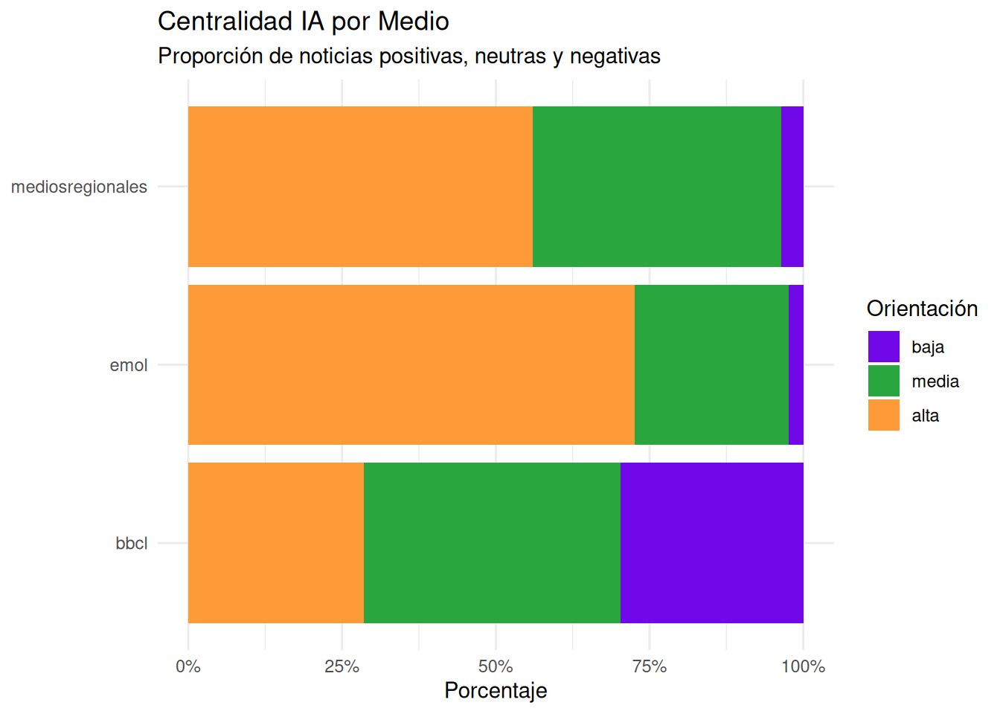
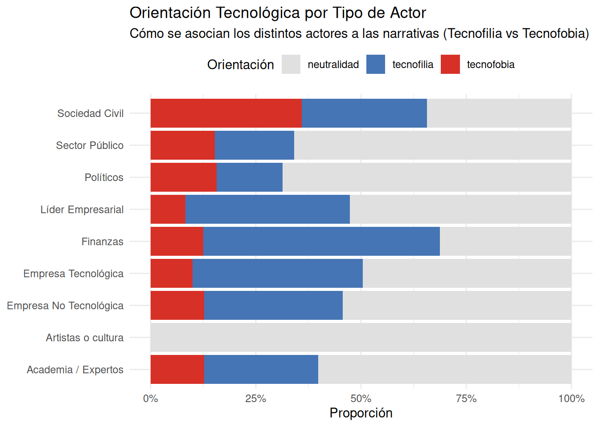
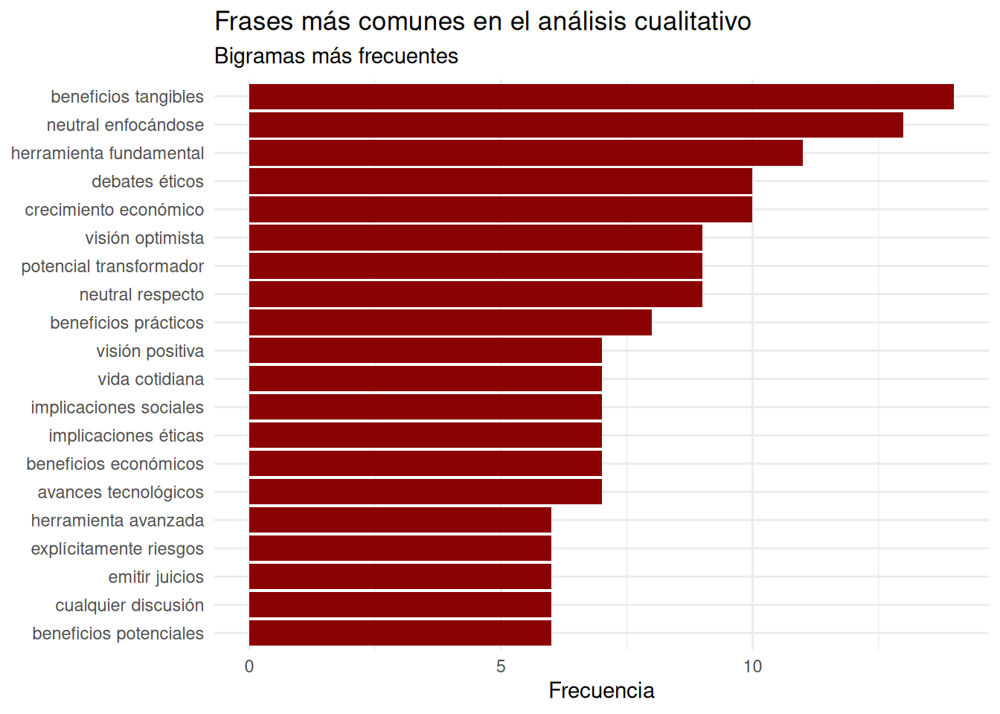
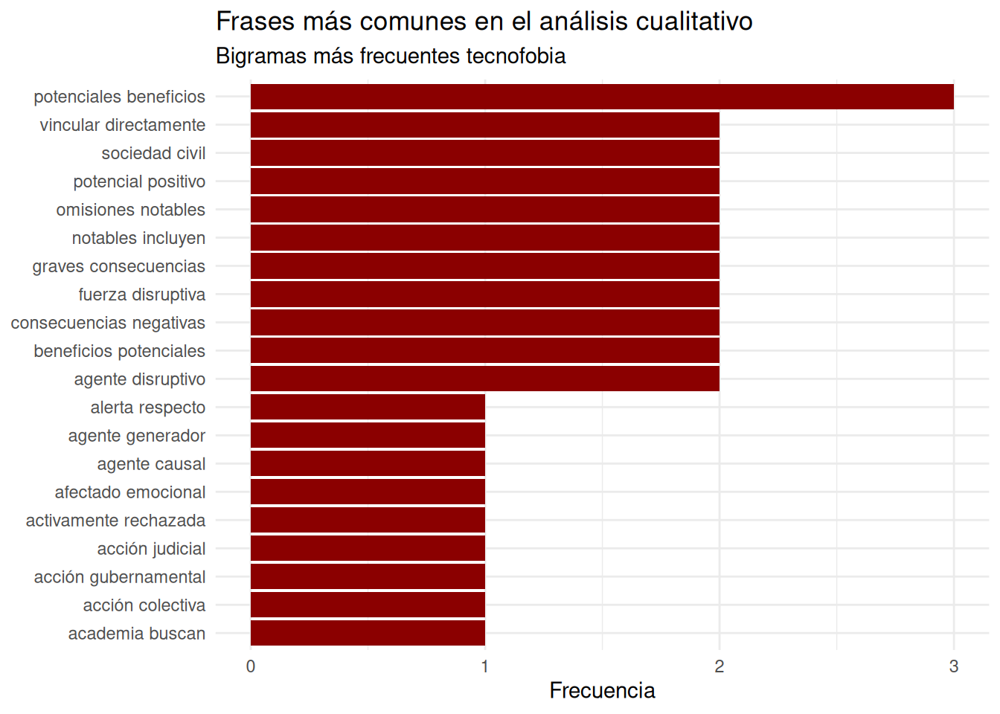
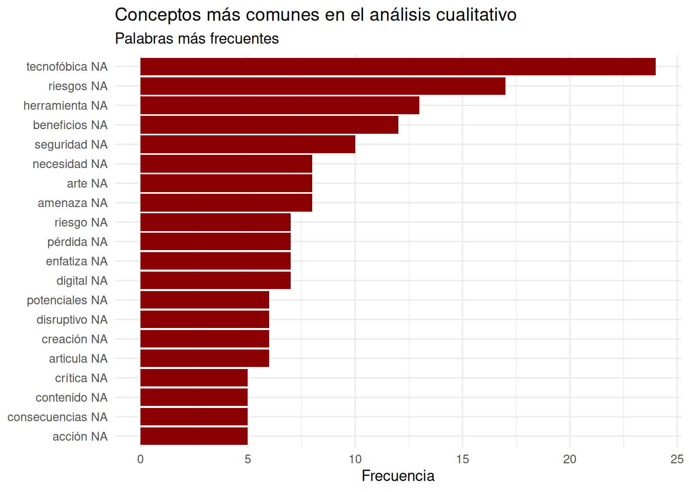

1 Antecedentes
1.1 La revolución de la Inteligencia Artificial
Attention is all you need (Vaswani et al., 2017): Artículo que crea la arquitectura transformer, que es la base de las IA actuales debido a su escalabilidad y eficiencia
Los grandes modelos de lenguaje (LLM por sus siglas en inglés) son modelos de Inteligencia Artificial entrenados en grandes volúmenes de datos, usualmente bajo la arquitectura de transformer, con la capacidad de comprender y generar texto para distintas tareas (traducción, programación, redacción, razonamiento, etc.)
30 de noviembre 2022: lanzamiento de ChatGPT. 100 millones de usuarios en un año.
-
Esto provocó un desarrollo acelerado de la IA en los últimos años:
- Áuge en la competencia y modelos open source: Claude, Gemini, Grok, Kimi-k2, Gemma, Gpt-Oss
- Múltiples aplicaciones: Vibe coding (Cursor, Windsurf), Ciencia (AlphaFold), Imágenes (MidJourney, NanoBanana), video (Veo3, Sora)
- Desarrollo de infraestructura clave: construcción de centros de datos y supercomputadores
- Avances en otras áreas como la robótica, la medicina, la neurociencia, etc.
1.2 Herramientas de consumidor vs. herramientas de desarrollador
Dentro del mercado de la IA, existen distintos productos para distintas necesidades
Los servicios para los consumidores son los que comúnmente uno utiliza, los chatbot accesibles a través de las páginas web o aplicaciones de celular de ChatGpt o Gemini. Usualmente, tienen planes gratuitos y de pago.

Por otro lado, están las plataformas para desarrolladores, comúnmente ofrecidas por las empresas a través de una Interfaz de Programación de Aplicaciones (API por sus siglas en inglés). A diferencia de los chatbots, las APIs cobran por cada llamada o mensaje enviado, y están diseñadas para poder desarrollar usos específicos de los LLM.
En este taller utilizaremos este segundo enfoque, para aprovechar los beneficios que puede otorgar la Inteligencia Artificial, pero manteniendo el control a la hora de procesar los datos y tomar las decisiones importantes en el análisis.
1.3 LLMs para análisis cualitativo
Anteriormente, la forma de utilizar text-as-data más común era a través de modelos más básicos, con una menor capacidad de comprender el contexto amplio. Por ejemplo, para identificar tipos de consumidores en un dataset de comentarios, se podía ejecutar un LDA para modelar los tópicos subyacentes.
Desde la arquitectura transformers, la capacidad de comprensión del contexto se disparó, con algoritmos como BERTopic que aprovechan este avance para realizar tópicos que capturen una mayor complejidad.
Sin embargo, los LLMs llevan esto a otro nivel, permitiendo realizar análisis profundo, cadenas de pensamiento, codificaciones y mapear redes entre actores. Softwares como Atlas.ti, ampliamente utilizado para el análisis cualitativo, ya integraron la codificación automática con GPT en sus útimas versiones.
-
La literatura reciente ha demostrado formas innovadoras de utilizar estas herramientas para diferentes técnicas de análisis cualitativo:
Para realizar análisis de contenido (Bijker et al., 2024)
Para mapear redes entre actores (Bro, 2025)
Para realizar análisis de discurso (Zhang et al., 2025)
Para teoría fundamentada (Yue et al., 2025)
Según Hayes (2025) los LLMs tienen un potencial revolucionario para la investigación cualitativa, donde los investigadores pueden “conversar” con los datos y probar conexiones teóricas que podrían tardar meses.
Estas potencialidades, en vez de reemplazar nuestras habilidades, las potencian, otorgándonos nuevas herramientas, mientras que el rol del sujeto se mantiene central en la parametrización, diseño de prompts, evaluación de outputs y creación de los marcos teóricos y operacionalizaciones adecuadas.
La adaptación de los métodos y su validación es algo que está recién comenzando, y mientras que algunos estudios han destacado una buena correspondencia entre los códigos que realizan los LLM y los humanos, se han presentado limitaciones y recomendaciones
Limitaciones
- Los códigos pueden ser más generales y omitir temas sensibles
- Los LLMs tienen el riesgo de alucinar (aunque esto ha reducido considerablemente en el último tiempo)
- Tienen una mayor dificultad de capturar tendencias generales
- Recomendaciones
- Ingeniería de prompts precisa y bien pensada para el caso de uso específico
- Parametrización y selección correcta de modelos
- Colaboración y validación constante entre el investigador y el LLM, este es una herramienta útil, no reemplaza el trabajo.
2 Contenidos del taller
En base a esto, el objetivo principal del taller es presentar un flujo de trabajo innovador para codificación cualitativa con LLMs, con un rol central del investigador en todo el proceso, y que puedan adaptar a múltiples casos de uso académicos y profesionales y distintas disciplinas. La gran mayoría de los análisis conducidos serán deductivos, para aplicar marcos teóricos relevantes y reducir la posibilidad de alucinación a través de prompting preciso.
Como ejercicio práctico, utilizaremos noticias chilenas para buscar los encuadres mediáticos (framing), o constructos sociales sobre la IA en medios chilenos populares. La unidad de análisis serán las noticias completas, pero podríamos realizar el mismo ejercicio separando por frases o por párrafos realizando un preprocesamiento de los datos. Esto se hace para reducir los tiempos de espera y la complejidad (muchos datos anidados). Este taller asume que tienen un conocimiento básico-intermedio de R, manejando tidyverse y manejo de dataframes y listas básico, y aunque intentaremos ser lo más explicativos, nos centraremos en lo más sustantivo.
Configuración de la sesión y preparaciones necesarias
Diseño y optimización de prompts, creación de criterios para evaluar los resultados de los LLMs
Comprensión básica de los principales parámetros de los modelos
Creación de una función para aplicar el análisis y automatización de esta a lo largo de un dataframe. Utilizaremos Gemini ya que otorga créditos gratis de la API.
Revisión de los resultados y estrategias de validación
Análisis y estrategias de reporte
Si no tienen una API KEY o tienen algún problema, hablen por el chat y les ayudaré. Ahora Exequiel presentará la primera parte aplicada del taller.
3 Configuración de la sesión
4 Procesamiento y carga de los datos
Nota: Por si acaso alguien tiene algún error inesperado para utilizar datamedios, preparemos un csv con la data ya extraída para que lo utilicen.
Cargamos los datos del paquete datamedios (https://exetrujillo.github.io/datamedios/).
Code
datos <- datamedios::extraer_noticias_fecha("inteligencia artificial", "2025-11-1", "2025-11-25", subir_a_bd = FALSE)Fuentes parseadas: bbclFuentes parseadas: emol-todasTotal de resultados posibles: 3087Noticia mas reciente disponible es de la fecha: 2025-11-29 16:27:57No hay mas noticias dentro del rango de fechas. Terminando la busqueda.Total de noticias encontradas en el rango de fechas: 52Total de resultados disponibles en emol para la busqueda: 795Fecha mas reciente: 2025-11-27 12:10:00Se alcanzo la fecha de inicio. Finalizando extraccion.Total de resultados disponibles en mediosregionales para la busqueda: 269Fecha mas reciente: 2025-11-24 11:01:00Se alcanzo la fecha de inicio. Finalizando extraccion.Total de resultados disponibles en guioteca para la busqueda: 71Fecha mas reciente: 2025-10-09 11:39:50Se alcanzo la fecha de inicio. Finalizando extraccion.No se encontraron datos para la fuente: guioteca en el rango de fechas especificado.Code
# Si no te funciona datamedios puedes usar esto. Debes saltarte los siguientes pasos hasta el muestreo.
# noticias_muestra <- read.csv("noticias_muestra.csv")Limpiamos los datos y seleccionamos las columnas de interés.
Code
datos <- datamedios::limpieza_notas(datos, sinonimos= c("IA", "chat gpt", "openai", "chatbot", "chatgpt"))
datos_filtrados <- datos %>%
select(titulo, contenido_limpio, fecha, medio, url)5 Explorar data
Code
datamedios::grafico_notas_fecha(datos_filtrados, "Inteligencia artificial", tema = "dark")Warning: 'config' objects don't have these attributes: 'toimageButtonOptions'
Valid attributes include:
'autosizable', 'displaylogo', 'displayModeBar', 'doubleClick', 'doubleClickDelay', 'editable', 'edits', 'fillFrame', 'frameMargins', 'globalTransforms', 'linkText', 'locale', 'locales', 'logging', 'mapboxAccessToken', 'modeBarButtons', 'modeBarButtonsToAdd', 'modeBarButtonsToRemove', 'notifyOnLogging', 'plotGlPixelRatio', 'plotlyServerURL', 'queueLength', 'responsive', 'scrollZoom', 'sendData', 'setBackground', 'showAxisDragHandles', 'showAxisRangeEntryBoxes', 'showEditInChartStudio', 'showLink', 'showSendToCloud', 'showSources', 'showTips', 'staticPlot', 'toImageButtonOptions', 'topojsonURL', 'typesetMath', 'watermark'Seleccionamos una submuestra de 20 noticias para reducir el tiempo de procesamiento de los análisis.
Code
set.seed(123)
noticias_muestra <- slice_sample(datos_filtrados, n=20)Exploramos el dataframe de noticias y guardamos los datos brutos de la muestra.
Code
head(noticias_muestra, 5) titulo
1 Inicia formalmente la COP30 en Brasil: claves del encuentro y las principales negociaciones en Belem
2 Boric en jornada final de la APEC: recalcó inclusión de mujeres y explicó plan de IA para Latam
3 Festival CREA 2025: líderes de la industria abordarán el rol de la creatividad en Chile
4 Universidad de Chile impartirá curso online gratuito sobre IA: cuándo comienza y cómo inscribirse
5 Microsoft devolverá dinero a millones de usuarios en Australia a los que aplicó sobrecostos
contenido_limpio
1 Este lunes se inicia formalmente la COP30 en Belem, Brasil, la cual estará dirigida por el presidente Luis Ignacio Lula da Silva. La instancia buscará nuevos consensos, en torno al desafío climático, entre las principales potencias. La cita culmina el 21 de noviembre. De acuerdo a un reporte de France 24, uno de los temas importantes a discutir será el modelo de financiación hacia países en desarrollo, para la ejecución de planes que tengan como objetivo frenar la crisis climática. También estarán en tabla negociaciones sobre los combustibles fósiles, la sequía y deforestación, que afecta a zonas críticas del planeta, como la Amazonía. De hecho, un punto importante de debate será lo que se denomina como “El papel de los pueblos indígenas en lucha contra el cambio climático”. Por lo mismo, arribaron hasta el lugar 3.000 líderes locales estén en medio de los diálogos. “Esta vez, los líderes mundiales vienen a Belem, al corazón de la Amazonía, más cerca de nuestros hogares, nuestros ríos y nuestros territorios”, afirmó Olivia Bisa, líder de la nación Chapra en Perú, de acuerdo a Euronews. Desafíos de la COP30 A eso se suma que las dos primeras jornadas de la cumbre climática estarán especialmente dedicadas, como días temáticos, a todo lo relacionado con adaptación, ciudades, infraestructura, agua, residuos, gobiernos locales, bioeconomía, economía circular, ciencia, tecnología e inteligencia artificial. Por otro lado, el presidente brasileño está llamado a ser una de las principales ‘estrellas’ de esta cita, y ha dejado ya un puñado de frases de referencia como “la ventana de oportunidad para actuar se está cerrando rápidamente”, la COP30 “será la COP de la verdad” y “la energía limpia representa la oportunidad económica del siglo XXI”. Lula afronta las críticas de organizaciones ecologistas por dar vía libre, prácticamente coincidiendo con la cumbre climática, a nuevas extracciones petrolíferas que han comenzado el pasado mes de octubre en varias áreas amazónicas. Por otro lado, se estima que esta será la primera COP que podría desarrollarse en medio de protestas por el clima, ya que desde el gobierno brasileño adelantaron que “no las prohibirán”. Recordar que las citas anteriores habían tenido lugar en países como Azerbaiyán, Emiratos Árabes Unidos y Egipto, donde las manifestaciones no se permitieron. Algo que sí genera ruido, en medio de la cumbre, es la ausencia de representantes de alto rango de Estados Unidos, uno de los países con mayor cantidad de emisiones a nivel mundial. Señalar que, el viernes pasado, un portavoz de la Casa Blanca, llamado Taylor Rogers, había señalado que: “El presidente Trump no pondrá en peligro la seguridad económica y nacional de nuestro país para perseguir objetivos climáticos vagos que están matando a otros países”. Por otro lado, según RFI, el encuentro se da en medio de lo que se denomina como “Paradoja China”, ya que el país es responsable de casi 12.000 millones de toneladas de CO₂ al año, lo que representa casi un tercio del total mundial. Pero, a su vez, es el primer inversor mundial en energías renovables. “Para comprender esta doble faceta, hay que medir la magnitud del giro energético chino. El país está viviendo una auténtica revolución industrial verde. En el sector fotovoltaico, por ejemplo, Pekín ha instalado en cinco meses tantos paneles solares como los que tiene Estados Unidos en total. Y ocho de cada diez paneles vendidos en el planeta salen hoy de fábricas chinas”, determinaron. Hay que señalar que la semana pasada, en vísperas de las negociaciones, intervinieron mandatarios como Gustavo Petro (Colombia), Gabriel Boric (Chile) y el propio Lula da Silva.
2 El Presidente Gabriel Boric participó de la última jornada de líderes del Foro de Cooperación Económica de Asia Pacífico (APEC) que se realizó en la ciudad de Gyeongju. Destacó la inclusión de las mujeres en políticas sociales y se refirió respecto al trabajo con Inteligencia Artificial que el gobierno realiza con Brasil. En la declaración oficial con las conclusiones de la cita de líderes internacionales se abordó la importancia de asegurar que las oportunidades y beneficios de la prosperidad sean distribuidas de forma equitativa en el Asia Pacífico, en particular en la entrega de respuestas efectivas a desafíos globales en materia energética, alimentaria, ambiental y climática. Durante su intervención, el presidente de Chile, remarcó la importancia de trabajar para consolidar políticas sociales que fortalezcan la inclusión de las mujeres en el mundo laboral: “Actualmente los bienes materiales condicionan muchísimo la expansión de las familias, por lo menos en los países desarrollados y en vías de desarrollo, ofrecer condiciones más seguras y estables para la inclusión de la mujer en el mundo laboral es tremendamente importante”. En esa línea, el mandatario destacó la reforma de sala cuna, señalando que apunta a que “el ser madre no sea una discriminación a la hora de encontrar trabajo”, y el Sistema Nacional de Cuidados, explicando que en Chile, cuidar es una labor mayoritariamente de mujeres: “cuidar es trabajar y entender eso como inclusión al mundo laboral por parte de las mujeres me parece que es importante pensando también en la perspectiva demográfica”. Inteligencia Artificial El segundo eje que abordó el Jefe de Estado en su discurso en APEC fue respecto a la inteligencia artificial. En ese sentido, abordó la iniciativa que está impulsando Chile junto a Brasil, señalando que “nos propusimos crear un modelo de lenguaje desde América Latina para el mundo que se llama Latam-GPT. Estamos trabajando para crear nuestro propio modelo de lenguaje desde América Latina para justamente preservar nuestra identidad”. En ese línea, el Presidente enfatizó que “queremos contribuir a que la inteligencia artificial recoja nuestra cultura y nuestro intercambio con el resto de las culturas. Desde ese punto de vista los invito a que vean a Chile también desde el Asia Pacífico como un hub para América Latina”. Al finalizar, el mandatario invitó a sus pares “a considerar a nuestro país como una puerta de entrada a América Latina” y a “pensar el comercio desde la perspectiva cultural”. Durante la sesión de cierre y en el marco de la Declaración de Líderes, se anunciaron de manera oficial las próximas sedes de la cumbre internacional: China 2026, Vietnam 2027, México 2028, Singapur 2030, Japón 2031, Chile 2032, Papúa Nueva Guinea 2033 y Perú 2034. Desde el jueves en Corea El jefe de Estado llegó este jueves a Seúl y participó en el Seminario Empresarial Chile – Corea del Sur en Seúl, visitó el Instituto de Ciencia y Tecnología de Corea (KIST) y se reunió con el exsecretario general de Naciones Unidas Ban Ki Moon, antes de trasladarse a Gyeongju para la cumbre. El mandatario anunció además la firma de nuevos convenios entre la Asociación de Comercio Internacional de Corea (KITA, en inglés) y los organismos ProChile e InvestChile para fortalecer la cooperación entre las empresas de los dos países. La cumbre de APEC, que reúne a 21 territorios de Asia y América bañados por el océano Pacífico, se desarrolló con la ausencia del presidente estadounidense, Donald Trump, que este jueves protagonizó una mediática reunión con el presidente chino, Xi Jinping, en la cercana ciudad de Busan antes de partir de vuelta a Washington.
3 El próximo 24 de noviembre se llevará a cabo una nueva versión del Festival CREA, que año a año reúne a cineastas, publicistas, empresarios, autoridades del gobierno y otros líderes de la industria creativa, del marketing y las comunicaciones en un espacio de reflexión, inspiración, reconocimiento y networking. Con el enunciado “Humanidad Aumentada: Un nuevo ecosistema creativo”, el festival organizado por la Cámara de Empresas Creativas de Chile, invita a reflexionar sobre cómo cómo convergen hoy en día las ideas, personas y tecnología, y cómo esta última está impulsando la innovación, la productividad, modelos de negocio disruptivos. Además, se planteará como los talentos se transforman en comunidades que reimaginan el valor, y aportan al crecimiento económico, desarrollo social y cultural. En un comunicado de prensa, la directiva de la Cámara de Empresas Creativas explicó que “Humanidad Aumentada representa la unión entre el talento humano y las posibilidades que brinda la tecnología. Es una invitación a repensar cómo la creatividad puede seguir siendo el motor que impulsa el desarrollo económico, social y cultural de Chile”. El Festival CREA -del que BioBioChile es media partner- se realizará el lunes 24 de noviembre en CAA 660, desde las 15:00 horas, y reunirá a líderes, empresarios, emprendedores, creativos, artistas, productores, generadores de contenido y representantes de medios, en una jornada de inspiración, aprendizaje, colaboración y reconocimiento, en la que habrá charlas, exposiciones, paneles y workshops. Con diversos exponentes del mundo público y privado, en las charlas de la próxima versión del Festival CREA se abordarán temas como la Inteligencia Artificial y cómo esta está modificando el mundo de las ideas; el nuevo ecosistema de medios; y la relevancia de la creatividad en las empresas, entre otros. La programación incluye charlas magistrales de expertos, presentaciones de casos de éxito, paneles de conversación e instancias formativas, y la entrega de los Premios CREA, reconocimiento a la creatividad transformadora que genera impacto positivo en los negocios, las personas y la sociedad.
4 La Universidad de Chile impartirá, el próximo lunes 24 de noviembre, un curso gratuito enfocado en una de las herramientas más desafiantes del último tiempo: la inteligencia artificial. El curso “¡Atrévete a dar el salto con la IA Generativa!” está dirigido a todo quien desee aprender sobre IA generativa, sin requisitos previos de conocimientos técnicos. Además, tiene como objetivo “utilizar la IA para resolver tareas reales del día a día” y, a través de diversos ejemplos, aprender a pedirle cosas a esta herramienta para así obtener buenos resultados en mejorar, por ejemplo, tu currículum. ¿Cómo inscribirse en el curso? El programa es 100% en línea, autoinstruccional y se articula mediante la plataforma abierta de e-learning “Open UCHILE”. Puedes avanzar a tu propio ritmo, con foco en la aplicación práctica de IA generativa en situaciones cotidianas. Para participar, debes tener una cuenta en “Open UCHILE”. Si no la tienes, debes seguir los siguientes pasos para crear tu acceso: -Crea tu cuenta Open UChile de forma gratuita haciendo clic AQUÍ. -Verifica tu correo electrónico y activa tu cuenta siguiendo las instrucciones enviadas a tu bandeja de entrada. -Inscríbete en el curso haciendo clic en el botón “Inscríbase ahora” que encontrarás a continuación. Señalar que el curso es completamente gratuito. Sin embargo, el certificado tiene un valor de $30.000. Estructura y contenidos del curso El programa cuenta con los siguientes módulos: El diagnóstico de competencias, la optimización del CV y la optimización del CV, y abordará conceptos clave sobre la IA Generativa; el desarrollo de prompts o instrucciones efectivas; y aplicaciones concretas de las herramientas actuales en contextos cotidianos y laborales. Son 20.000 los cupos que abrirá el curso y actualmente lleva más de 1.800 inscritos.
5 Microsoft anunció este jueves que reembolsará a millones de usuarios australianos el pago de su servicio Microsoft 365 tras las denuncias de la Comisión Australiana de Competencia y Consumo (ACCC, en inglés), que acusa a la empresa de haber inducido al error a unos 2,7 millones de clientes sobre los costos de sus suscripciones. La compañía estadounidense admitió que “no comunicó con suficiente claridad” los cambios en sus tarifas introducidos en octubre de 2024, cuando aumentó los precios de los planes personales y familiares hasta en un 45% al integrar su asistente de Inteligencia Artificial (IA) Copilot. En una carta enviada a los clientes, Microsoft pidió disculpas y ofreció la posibilidad de regresar a un plan más económico sin funciones de IA, además de reembolsar los pagos realizados desde el 30 de noviembre de 2024 a quienes opten por esa opción antes de que termine 2025. La respuesta de la empresa se produce después de que el regulador australiano presentara la semana pasada una demanda contra la tecnológica por presuntamente ocultar a los consumidores la existencia de una alternativa más barata, conocida como “Microsoft 365 Classic”, que mantenía las prestaciones anteriores sin el asistente Copilot. “Las empresas deben proporcionar información precisa sobre sus servicios y precios. No hacerlo supone un riesgo de infringir la ley de consumo australiana”, advirtió la presidenta de la ACCC, Gina Cass-Gottlieb, al anunciar la acción judicial. Microsoft reconoció que su actuación no cumplió con los estándares de transparencia que la compañía “ha mantenido durante más de 40 años” en el país y aseguró que “aprenderá de este error”. Las multas máximas por infracciones a la Ley Australiana del Consumidor pueden alcanzar los 50 millones de dólares australianos (más de 32,5 millones de dólares estadounidenses o unos 28,1 millones de euros) o el 30% de la facturación de la empresa durante el período de la infracción. Microsoft 365, que agrupa programas como Word, Excel, PowerPoint y servicios en la nube a través de OneDrive, integra Copilot como su principal herramienta de IA generativa desde finales de 2024.
fecha medio
1 2025-11-10 bbcl
2 2025-11-01 bbcl
3 2025-11-19 bbcl
4 2025-11-21 bbcl
5 2025-11-06 bbcl
url
1 https://www.biobiochile.cl/noticias/internacional/mundo/2025/11/10/inicia-formalmente-la-cop30-en-brasil-claves-del-encuentro-y-las-principales-negociaciones-en-belem.shtml
2 https://www.biobiochile.cl/noticias/nacional/chile/2025/11/01/boric-en-jornada-final-de-la-apec-recalco-inclusion-de-mujeres-y-explico-plan-de-ia-para-latam.shtml
3 https://www.biobiochile.cl/noticias/economia/negocios-y-empresas/2025/11/19/festival-crea-2025-lideres-de-la-industria-abordaran-el-rol-de-la-creatividad-en-chile.shtml
4 https://www.biobiochile.cl/noticias/servicios/toma-nota/2025/11/21/universidad-de-chile-impartira-curso-online-gratuito-sobre-ia-cuando-comienza-y-como-inscribirse.shtml
5 https://www.biobiochile.cl/noticias/economia/negocios-y-empresas/2025/11/06/microsoft-devolvera-dinero-a-millones-de-usuarios-en-australia-a-los-que-aplico-sobrecostos.shtmlCode
write.csv(noticias_muestra, "noticias_muestra.csv")6 Configuramos Gemini
Vamos a utilizar `gemini.R` (Kim, 2025), un paquete que nos abstrae de utilizar la API directamente, con funciones construidas útiles para hacer el análisis.
Cargamos las variables de entorno, en particular la API key de Gemini. Deben crear un archivo .Renviron y pegar lo siguiente:
GEMINI_API_KEY =tuapikeyaqui
(espacio en blanco)Además hacemos un test simple. Si recibimos la respuesta de Gemini entonces podemos pasar a lo siguiente.
Code
readRenviron(".Renviron")
setAPI(Sys.getenv("GEMINI_API_KEY")) # check https://aistudio.google.com/api-keysℹ API key ...ZKEw is set.→ You may try `gemini_chat('What is CRAN?')`Code
gemini("¿Cuál es la diferencia entre la inteligencia artificial y la inteligencia artesanal? Responde en una línea")Gemini is answering... text
"La diferencia clave es que la inteligencia artificial es creada por máquinas a través de algoritmos, mientras que la inteligencia artesanal es desarrollada por humanos a través del aprendizaje y la experiencia.\n" 7 Parámetros de gemini (y casi todos los LLM)
Configuramos los parámetros para el uso de la API.
- g_model: En model se pueden usar varios para respuesta de texto, como “gemini-2.5-pro”, “gemini-2.5-flash”, “gemini-2.5-flash-lite”, etc. Ahora está disponible la familia gemini 3. Pueden revisar el listado completo aquí.
- g_temperature: Podemos elegir también la temperatura para el modelo. Apunta a la objetividad-creatividad permitida en las respuestas. Números más cercanos a cero serían más “objetivos” y más conservadores (lo que a veces es menos útil), números más cercanos a dos serían más “creativos”.
- g_seed: También podemos setear una semilla para hacer los resultados más reproducibles aunque no podemos asegurarlo completamente.
- Existen otros parámetros que para este caso no recomendamos cambiarlos, sin embargo, su información puede encontrarse en la documentación de la API de Gemini.
Code
# Parámetros configurables
g_model = "2.5-flash-lite"
g_temperature = 0.7
g_seed = 42
# Los siguientes recomendamos no cambiarlos para pruebas básicas
# maxOutputTokens = 8192
# topK = 40
# topP = 0.95
# timeout = 608 Prompts
Cuando diseñamos prompts buscamos, por lo general, la respuesta a cierta pregunta o la resolución de algún problema. La forma en la que diseñamos un prompt influye estructuralmente en la respuesta que podamos recibir de un modelo de LLM.
En estricto rigor, el paquete que utilizamos no permite que le pasemos instrucciones de sistema, petición de texto y estructuras de respuesta por separado. Nosotros en este caso los separamos en objetos distintos solo para hacerlo más modular. Tenemos en este caso 3 partes, para comenzar a moldear las respuestas dependiendo de nuestro caso específico de estudio:
system_prompt: Define el rol y forma de respuesta general del LLM. La idea es darle una idea específica de como “qué tipo de persona” tiene que comportarse y qué campos de conocimientos debe manejar para responder (es distinto preguntarle de inteligencia artificial a un experto en ciencias de la computación o a un periodista). Podemos utilizar este recurso para delimitar ciertos marcos teóricos y disciplinares al momento de esperar una respuesta.
prompt_instruccion: Como su nombre lo dice, las instrucciones específicas. En nuestro caso, aquí es donde operacionalizamos las dimensiones analíticas. Debemos indicarle explícitamente al modelo qué conceptos teóricos debe buscar. Aquí traducimos conceptos abstractos (como la construcción social o el encuadre mediático) en directrices concretas: evaluar si la tecnología se presenta como amenaza u oportunidad (tecnofobia/tecnofilia), identificar qué actores tienen voz y detectar los sesgos latentes. Básicamente, esta sección funciona como nuestro libro de códigos o pauta de análisis cualitativo, asegurando que el modelo no divague, sino que interrogue al texto periodístico con un propósito definido.
json_estructura: Finalmente, definimos el formato de salida. Aunque el análisis sea cualitativo, necesitamos sistematizar la información para poder trabajarla a escala en R. Al exigir una respuesta en formato JSON estricto, forzamos al modelo a sintetizar su razonamiento complejo en una estructura de datos legible por la máquina. En otras palabras, podremos transformar cientos o miles de análisis de texto individuales en un dataframe. Gracias a esto, podremos posteriormente calcular frecuencias, encontrar relaciones entre variables (por ej. ¿un medio es más tecnofílico que otro?) y utilizar técnicas de Procesamiento de Lenguage Natural para identificar hallazgos significativos.
Nuestro propósito aquí es mostrar la estructura que usamos para que un LLM siga nuestras instrucciones como queremos, pero para cada caso de uso el tipo de prompt, los marcos teóricos, preguntas específicas y estructura de respuesta que pidamos será distinta.
Code
system_prompt <- "Eres un científico social experto en análisis cualitativo con formación interdisciplinaria en sociología, antropología, ciencias políticas y ciencias de la comunicación. Tienes amplia experiencia en investigación de medios, análisis de discurso, estudios culturales y semiótica social. Posees la capacidad de examinar contenido mediático desde múltiples perspectivas teóricas, identificando marcos narrativos e interpretativos, agendas mediáticas, construcciones simbólicas y procesos de significación. Mantienes una perspectiva académica rigurosa y pensamiento crítico interdisciplinario, fundamentando tus análisis en la evidencia proporcionada."
prompt_instruccion <- "Analiza la siguiente noticia relacionada con Inteligencia Artificial (IA) desde una perspectiva de ciencias sociales y comunicación.
Requisitos para el análisis:
- Evalúa la centralidad de la IA en la narrativa.
- Identifica orientaciones tecnofóbicas, neutrales o tecnofílicas.
- Examina cómo se representa la IA: capacidades, riesgos, limitaciones, beneficios.
- Detecta sesgos, omisiones o énfasis en el discurso.
- Identifica los actores sociales mencionados y clasifícalos.
Clasifica a cada actor en una de las siguientes categorías:
1. Empresa Tecnológica (Ej: OpenAI, Google)
2. Empresa No Tecnológica (Ej: Retail, Minería)
3. Finanzas (Ej: Bancos, Fondos de inversión)
4. Sector Público (Ej: Ministerios, Agencias)
5. Políticos (Ej: Legisladores, Presidentes)
6. Academia / Expertos (Ej: Universidades, Investigadores)
7. Líder Empresarial (Personas: CEOs, Fundadores)
8. Sociedad Civil (ONGs, Ciudadanía)
Genera un archivo JSON con los resultados."
json_estructura <- 'Responde exclusivamente en formato JSON válido. Tu respuesta debe ser ÚNICAMENTE el objeto JSON, comenzando con "{" y terminando con "}".
Consideraciones:
- Las keywords deben ser exactamente 5, en minúsculas.
- Actores: Identifica HASTA 5 actores principales. Si hay menos, no rellenes con información falsa ni NULLs innecesarios, simplemente cierra la lista.
- Label: Máximo 3 palabras. Si la IA no es central, el label debe reflejar el tema real.
Estructura requerida:
{
"keywords": ["palabra1", "palabra2", "palabra3", "palabra4", "palabra5"],
"orientacion_tecnologica": "tecnofobia|tecnofilia|neutralidad",
"centralidad_ia": "alta|media|baja",
"actores_principales": [
{
"nombre": "nombre_exacto_en_texto",
"categoria": "Categoría Seleccionada",
"rol_respecto_ia": "descripción breve de su posición"
}
],
"analisis": "Análisis denso de 4 a 6 oraciones sintetizando los hallazgos sociológicos, el tono y los marcos interpretativos detectados.",
"label": "etiqueta_breve"
}
'9 Función para crear prompt pasándole las noticias
Aquí concatenamos las partes del prompt que hicimos antes y le entregamos un input estructurado al LLM, pasándole el título y el contenido de la noticia. Al final imprimimos el resultado del prompt para una sola fila.
Code
# Crear prompt completo con contexto
crear_prompt_completo <- function(fila_noticia) {
# Extraer información de la fila
titulo <- fila_noticia$titulo
contenido <- fila_noticia$contenido_limpio
fecha <- fila_noticia$fecha
# Crear contexto de la noticia
contexto_noticia <- paste0(
"# CONTEXTO DE LA NOTICIA:\n",
"Título: ", titulo, "\n",
"CONTENIDO:\n", contenido
)
# Combinar todos los elementos del prompt
prompt_final <- paste(
system_prompt,
"\n\n",
prompt_instruccion,
"\n\n",
contexto_noticia,
"\n\n",
json_estructura,
sep = ""
)
return(prompt_final)
}
# Aquí ejecutamos
prompt_example <- crear_prompt_completo(noticias_muestra[6,])
example <- gemini(
prompt_example,
model = g_model,
temperature = g_temperature,
seed = g_seed
)Gemini is answering...Code
cat(example)```json
{
"keywords": [
"ciencia",
"china",
"occidente",
"investigación",
"inteligencia artificial"
],
"orientacion_tecnologica": "neutralidad",
"centralidad_ia": "media",
"actores_principales": [
{
"nombre": "PNAS",
"categoria": "Academia / Expertos",
"rol_respecto_ia": "Fuente de datos sobre el avance científico y la colaboración en IA."
},
{
"nombre": "Harvard",
"categoria": "Academia / Expertos",
"rol_respecto_ia": "Referente histórico en investigación, cuya posición es desafiada por instituciones chinas en IA."
},
{
"nombre": "MIT",
"categoria": "Academia / Expertos",
"rol_respecto_ia": "Institución académica de prestigio que se ubica en el décimo lugar, reflejando el cambio en el panorama científico."
},
{
"nombre": "Deepseek",
"categoria": "Empresa Tecnológica",
"rol_respecto_ia": "Ejemplo de modelo lingüístico chino que demuestra la rapidez y bajo costo en el desarrollo de IA."
},
{
"nombre": "Estados Unidos",
"categoria": "Sector Público",
"rol_respecto_ia": "Potencia científica que mantiene el liderazgo en IA pero enfrenta desafíos por el avance de China."
}
],
"analisis": "La noticia adopta un marco interpretativo de competencia geopolítica y científica, donde el ascenso de China se presenta como un desafío para Occidente. La Inteligencia Artificial (IA) se posiciona como un campo estratégico clave en esta carrera, aunque no es el único foco. El discurso oscila entre la neutralidad al reportar datos y un sutil énfasis en la necesidad occidental de reaccionar ante el avance chino. Se observan omisiones sobre los actores empresariales tecnológicos chinos que impulsan este avance, centrándose más en instituciones académicas y el sector público, y se resalta la ventaja de EE.UU. en innovación disruptiva y cultura descentralizada.",
"label": "Ascenso científico de China"
}
```Code
print(noticias_muestra$contenido_limpio[6])[1] "Scientia potestas est (El conocimiento es poder). Esta frase fue acuñada por el filósofo inglés Francis Bacon a finales del siglo XVI, cuando Inglaterra se contaba entre las potencias mundiales líderes en ciencia y política. Bacon quería dejar claro a sus contemporáneos el valor estratégico del conocimiento, un principio que sigue siendo válido hasta hoy. Actualmente, el mapa mundial de la investigación está viviendo un cambio profundo. Según un estudio publicado en la revista Proceedings of the National Academy of Sciences (PNAS), en 2023 los científicos chinos lideraron casi la mitad de las investigaciones conjuntas con colegas estadounidenses. Un dato histórico que refleja el vertiginoso ascenso de este país como potencia científica: ahora marca la agenda de la investigación global. Un cambio de poder con nuevos criterios Ya no se trata solo de premios Nobel o cantidad de publicaciones. El liderazgo científico se mide con otros parámetros. De unas seis millones de investigaciones analizadas, el 45 por ciento de los proyectos conjuntos entre Estados Unidos y China fueron dirigidos por la parte china en 2023. En 2010, era apenas el 30 por ciento. Si la tendencia continúa, China podría alcanzar a Estados Unidos hacia 2027 o 2028 en campos estratégicos como inteligencia artificial, semiconductores y ciencia de materiales. También en número de publicaciones el país asiático lleva la delantera. Según el informe más reciente del G20 sobre investigación e innovación, casi 900 000 artículos científicos se publicaron desde ese país, tres veces más que en 2015. En el Nature Index, que evalúa las revistas científicas y médicas más importantes, China ya superó a Estados Unidos. Entre las diez instituciones con más publicaciones en ese índice, siete son chinas. Mientras tanto, el panorama para Occidente no es alentador: Harvard sigue liderando la clasificación, pero los puestos del 2 al 9 los ocupan universidades chinas. El MIT, el prestigioso Instituto Tecnológico de Massachusetts, aparece recién en el décimo lugar. Estrategia, inversión y redes: las claves del avance Pekín ha hecho de la ciencia el corazón de su estrategia de desarrollo. Abrió sus instituciones a la cooperación internacional y fomenta activamente el intercambio global. Estudiantes y científicos chinos son incentivados a trabajar en el extranjero, fortaleciendo una red mundial de colaboración. Además, a través de su iniciativa BRI de infraestructura y desarrollo, invierte miles de millones en educación y tecnología para atraer talento extranjero y consolidar lazos académicos. Según la PNAS, China utiliza deliberadamente la diplomacia científica como herramienta de poder. Fortalezas y límites del modelo Velocidad, inversión masiva y redes coordinadas: esas son las grandes ventajas del sistema chino. En ingeniería, electrónica, física, química y ciencia de materiales, sus resultados son notables. Sin embargo, el control centralizado también impone límites. China carece aún de innovaciones disruptivas y de la independencia que caracteriza a la ciencia occidental. El éxito puede planificarse; la creatividad, no. En ese sentido, Estados Unidos, con su cultura descentralizada e impulsada por empresas, sigue teniendo ventaja. A eso se suma que la cooperación internacional se ha vuelto más difícil. Estados Unidos y Europa consideran a China un rival estratégico y las tensiones geopolíticas y económicas de los últimos meses no ayudan. La carrera por la inteligencia artificial En inteligencia artificial (IA), Estados Unidos mantiene – por ahora – el liderazgo, pero el gigante asiático avanza con pasos firmes. Su modelo lingüístico Deepseek demuestra la rapidez y el bajo costo con que sus tecnologías pueden llegar al mercado. Harvard continúa siendo un referente, pero las academias chinas acortan distancias a gran velocidad. En las solicitudes de patentes de IA, China ya ocupa un rol central. Estados Unidos resiste, mientras Europa queda rezagada incluso con sus mejores instituciones. El impacto global: el nuevo orden científico El avance del gigante asiático está reconfigurando el equilibrio económico y geopolítico mundial. El país ya marca parte de la agenda global de investigación, mientras Europa pierde terreno en la carrera por las tecnologías del futuro. Este crecimiento coincide con una etapa de debilidad en Occidente. La investigación estadounidense sufre recortes, polarización política y fuga de talentos. Las políticas de austeridad del presidente Donald Trump y la rivalidad abierta entre ambas potencias han reducido los proyectos conjuntos y empujado a muchos científicos hacia China. Europa tendría que apostar decididamente por una política científica común, más allá de los intereses nacionales. Su diversidad – de lenguas, culturas y tradiciones – puede ser una fuente de innovación, no una debilidad."Analicemos la respuesta: ¿Hay algún problema que detectemos? ¿Algo que no funcione como esperábamos? El prompt final que obtuvimos es el resultado de un proceso de prueba y error, en donde diferentes ajustes fueron realizados. Deberíamos observar varias noticias distintas para ver como funciona, y probar si en distintos intentos el modelo está respondiendo de forma similar. Si queremos que se centre en otras facetas del discurso, lo esencial está en esta etapa de evaluación, en donde la meta es asegurarnos que el LLM esté logrando cubrir nuestros objetivos de investigación de forma satisfactoria.
10 Iteración guardando en una lista
Iteramos por cada una de las filas del dataframe para obtener nuestra respuesta estructurada. Guardamos esto en una lista manejando los errores que puedan surgir. A veces, trabajando con API, una fila va a tener un error y nos puede detener el trabajo subsiguiente. Para ello implementamos una lógica de reintentos.
Code
lista_respuestas <- list()
lista_respuestas <- vector("list", nrow(noticias_muestra)) # Creamos posiciones vacías en la lista para cada fila de nuestro dataframe
for (i in 1:nrow(noticias_muestra)){
noticia <- noticias_muestra[i,]
prompt <- crear_prompt_completo(noticia)
analisis <- NULL
# Lógica de reintentos
for(intento in 1:3){
analisis <- tryCatch(
gemini(prompt, model = g_model, temperature = g_temperature, seed = g_seed),
error = function(e) { message(paste("Error en fila", i, "intento", intento)); return(NULL) }
)
if(!is.null(analisis)) break
Sys.sleep(2)
}
if(!is.null(analisis)) {
lista_respuestas[[i]] <- analisis
} else {
lista_respuestas[[i]] <- NA
message(paste("Fila", i, "quedó vacía por error en API."))
}
Sys.sleep(2)
}Gemini is answering...
Gemini is answering...
Gemini is answering...
Gemini is answering...
Gemini is answering...
Gemini is answering...
Gemini is answering...
Gemini is answering...
Gemini is answering...
Gemini is answering...
Gemini is answering...
Gemini is answering...
Gemini is answering...
Gemini is answering...
Gemini is answering...
Gemini is answering...
Gemini is answering...
Gemini is answering...
Gemini is answering...
Gemini is answering...Revisamos el caso de la sexta fila, que debiese ser muy parecido al del ejemplo inicial. Un tip: para ahorrar recursos, podemos realizar un análisis a una menor escala, ver si funciona correctamente, y luego ejecutarlo en todos los datos. Para la versión final, también podríamos utilizar un modelo de razonamiento más caro (gemini 3 pro), para asegurarnos que los resultados definitivos sean los mejores.
Code
cat(lista_respuestas[[6]])```json
{
"keywords": [
"ciencia",
"china",
"occidente",
"investigación",
"inteligencia artificial"
],
"orientacion_tecnologica": "neutralidad",
"centralidad_ia": "media",
"actores_principales": [
{
"nombre": "PNAS",
"categoria": "Academia / Expertos",
"rol_respecto_ia": "Fuente de datos sobre el avance científico y la colaboración en IA."
},
{
"nombre": "Harvard",
"categoria": "Academia / Expertos",
"rol_respecto_ia": "Referente histórico en investigación, cuya posición es desafiada por instituciones chinas en IA."
},
{
"nombre": "MIT",
"categoria": "Academia / Expertos",
"rol_respecto_ia": "Institución académica de prestigio que se ubica en el décimo lugar, reflejando el cambio en el panorama científico."
},
{
"nombre": "Deepseek",
"categoria": "Empresa Tecnológica",
"rol_respecto_ia": "Ejemplo de modelo lingüístico chino que demuestra la rapidez y bajo costo en el desarrollo de IA."
},
{
"nombre": "Estados Unidos",
"categoria": "Sector Público",
"rol_respecto_ia": "Potencia científica que mantiene el liderazgo en IA pero enfrenta desafíos por el avance de China."
}
],
"analisis": "La noticia adopta un marco interpretativo de competencia geopolítica y científica, donde el ascenso de China se presenta como un desafío para Occidente. La Inteligencia Artificial (IA) se posiciona como un campo estratégico clave en esta carrera, aunque no es el único foco. El discurso oscila entre la neutralidad al reportar datos y un sutil énfasis en la necesidad occidental de reaccionar ante el avance chino. Se observan omisiones sobre los actores empresariales tecnológicos chinos que impulsan este avance, centrándose más en instituciones académicas y el sector público, y se resalta la ventaja de EE.UU. en innovación disruptiva y cultura descentralizada.",
"label": "Ascenso científico de China"
}
```11 Limpieza y aplanamiento
Aplicamos una función de limpieza a la lista para eliminar los elementos markdown que nos entregó el LLM en la respuesta. Como output tendremos una lista concatenada con los distintos elementos que le solicitamos y lista para usar en R.
Code
$keywords
[1] "cambio climático" "energía limpia"
[3] "pueblos indígenas" "financiación"
[5] "negociaciones climáticas"
$orientacion_tecnologica
[1] "neutralidad"
$centralidad_ia
[1] "baja"
$actores_principales
nombre categoria
1 Luis Ignacio Lula da Silva Políticos
2 Olivia Bisa Sociedad Civil
3 Taylor Rogers Políticos
4 Gustavo Petro Políticos
5 Gabriel Boric Políticos
rol_respecto_ia
1 Mencionado como anfitrión y figura clave, promotor de la energía limpia y la oportunidad económica del siglo XXI.
2 Líder indígena que resalta la importancia de la proximidad de la cumbre a sus territorios, sin mención directa a la IA.
3 Portavoz de la Casa Blanca que expresa escepticismo sobre objetivos climáticos vagos, sin mención directa a la IA.
4 Mandatario que intervino en vísperas de las negociaciones, sin mención directa a la IA.
5 Mandatario que intervino en vísperas de las negociaciones, sin mención directa a la IA.
$analisis
[1] "La noticia se centra en la COP30 y sus negociaciones climáticas, con la Inteligencia Artificial mencionada tangencialmente como parte de un día temático. La narrativa principal gira en torno a la urgencia climática, la financiación, el papel de los pueblos indígenas y las posturas políticas frente a la crisis. La IA no es un eje central de la discusión, sino un componente dentro de un abanico de temas científicos y tecnológicos. La orientación general es pragmática y orientada a la acción climática, con un tono que busca generar consensos, aunque se reconocen tensiones políticas y críticas a ciertas políticas energéticas."
$label
[1] "cop30 y cambio climático"Ya tenemos nuestro objeto de listas concatenadas, pero también podemos crear un dataframe para operarlo de mejor manera en R. En este caso tenemos una estructura algo compleja, ya que tenemos una lista que dentro también tiene un dataframe (con los actores y su rol). Entonces, creamos un dataframe aplanando nuestra lista.
Code
aplanar_elemento <- function(elemento) {
data.frame(
# Vectores simples
keywords = paste(elemento$keywords, collapse = "; "),
orientacion_tecnologica = elemento$orientacion_tecnologica,
centralidad_ia = elemento$centralidad_ia,
label = elemento$label,
analisis = elemento$analisis,
# Información de actores (concatenamos todo)
actores_nombres = paste(elemento$actores_principales$nombre, collapse = "; "),
actores_categorias = paste(elemento$actores_principales$categoria, collapse = "; "),
actores_roles = paste(elemento$actores_principales$rol_respecto_ia, collapse = "; "),
stringsAsFactors = FALSE
)
}
# Aplicar a todos los elementos
df_proc <- purrr::map_dfr(lista_proc, aplanar_elemento)Finalmente podemos unificar en un dataframe para tener la información original y la de análisis en un mismo lugar
Code
datos_unificados <- bind_cols(noticias_muestra, df_proc)Para la información de los actores, guardaremos los dataframes que tenemos dentro de las listas en formato long junto a información de las noticias.
Code
extraer_actores_long <- function(i, noticias, lista_json) {
info_noticia <- noticias[i, ] %>%
select(titulo, medio, url)
elemento_llm <- lista_json[[i]]
actores_df <- elemento_llm$actores_principales
# Si no hay actores o está vacío, saltamos esta noticia
if (is.null(actores_df) || length(actores_df) == 0 || nrow(actores_df) == 0) {
return(NULL)
}
actores_df$orientacion_tecnologica <- elemento_llm$orientacion_tecnologica
actores_df$analisis <- elemento_llm$analisis
resultado <- bind_cols(info_noticia, actores_df)
return(resultado)
}
df_actores_unificados <- purrr::map_dfr(
1:nrow(noticias_muestra),
~extraer_actores_long(.x, noticias_muestra, lista_proc)
)
head(df_actores_unificados) titulo
1 Inicia formalmente la COP30 en Brasil: claves del encuentro y las principales negociaciones en Belem
2 Inicia formalmente la COP30 en Brasil: claves del encuentro y las principales negociaciones en Belem
3 Inicia formalmente la COP30 en Brasil: claves del encuentro y las principales negociaciones en Belem
4 Inicia formalmente la COP30 en Brasil: claves del encuentro y las principales negociaciones en Belem
5 Inicia formalmente la COP30 en Brasil: claves del encuentro y las principales negociaciones en Belem
6 Boric en jornada final de la APEC: recalcó inclusión de mujeres y explicó plan de IA para Latam
medio
1 bbcl
2 bbcl
3 bbcl
4 bbcl
5 bbcl
6 bbcl
url
1 https://www.biobiochile.cl/noticias/internacional/mundo/2025/11/10/inicia-formalmente-la-cop30-en-brasil-claves-del-encuentro-y-las-principales-negociaciones-en-belem.shtml
2 https://www.biobiochile.cl/noticias/internacional/mundo/2025/11/10/inicia-formalmente-la-cop30-en-brasil-claves-del-encuentro-y-las-principales-negociaciones-en-belem.shtml
3 https://www.biobiochile.cl/noticias/internacional/mundo/2025/11/10/inicia-formalmente-la-cop30-en-brasil-claves-del-encuentro-y-las-principales-negociaciones-en-belem.shtml
4 https://www.biobiochile.cl/noticias/internacional/mundo/2025/11/10/inicia-formalmente-la-cop30-en-brasil-claves-del-encuentro-y-las-principales-negociaciones-en-belem.shtml
5 https://www.biobiochile.cl/noticias/internacional/mundo/2025/11/10/inicia-formalmente-la-cop30-en-brasil-claves-del-encuentro-y-las-principales-negociaciones-en-belem.shtml
6 https://www.biobiochile.cl/noticias/nacional/chile/2025/11/01/boric-en-jornada-final-de-la-apec-recalco-inclusion-de-mujeres-y-explico-plan-de-ia-para-latam.shtml
nombre categoria
1 Luis Ignacio Lula da Silva Políticos
2 Olivia Bisa Sociedad Civil
3 Taylor Rogers Políticos
4 Gustavo Petro Políticos
5 Gabriel Boric Políticos
6 Gabriel Boric Políticos
rol_respecto_ia
1 Mencionado como anfitrión y figura clave, promotor de la energía limpia y la oportunidad económica del siglo XXI.
2 Líder indígena que resalta la importancia de la proximidad de la cumbre a sus territorios, sin mención directa a la IA.
3 Portavoz de la Casa Blanca que expresa escepticismo sobre objetivos climáticos vagos, sin mención directa a la IA.
4 Mandatario que intervino en vísperas de las negociaciones, sin mención directa a la IA.
5 Mandatario que intervino en vísperas de las negociaciones, sin mención directa a la IA.
6 Impulsor de la iniciativa Latam-GPT, busca preservar identidad latinoamericana en IA.
orientacion_tecnologica
1 neutralidad
2 neutralidad
3 neutralidad
4 neutralidad
5 neutralidad
6 neutralidad
analisis
1 La noticia se centra en la COP30 y sus negociaciones climáticas, con la Inteligencia Artificial mencionada tangencialmente como parte de un día temático. La narrativa principal gira en torno a la urgencia climática, la financiación, el papel de los pueblos indígenas y las posturas políticas frente a la crisis. La IA no es un eje central de la discusión, sino un componente dentro de un abanico de temas científicos y tecnológicos. La orientación general es pragmática y orientada a la acción climática, con un tono que busca generar consensos, aunque se reconocen tensiones políticas y críticas a ciertas políticas energéticas.
2 La noticia se centra en la COP30 y sus negociaciones climáticas, con la Inteligencia Artificial mencionada tangencialmente como parte de un día temático. La narrativa principal gira en torno a la urgencia climática, la financiación, el papel de los pueblos indígenas y las posturas políticas frente a la crisis. La IA no es un eje central de la discusión, sino un componente dentro de un abanico de temas científicos y tecnológicos. La orientación general es pragmática y orientada a la acción climática, con un tono que busca generar consensos, aunque se reconocen tensiones políticas y críticas a ciertas políticas energéticas.
3 La noticia se centra en la COP30 y sus negociaciones climáticas, con la Inteligencia Artificial mencionada tangencialmente como parte de un día temático. La narrativa principal gira en torno a la urgencia climática, la financiación, el papel de los pueblos indígenas y las posturas políticas frente a la crisis. La IA no es un eje central de la discusión, sino un componente dentro de un abanico de temas científicos y tecnológicos. La orientación general es pragmática y orientada a la acción climática, con un tono que busca generar consensos, aunque se reconocen tensiones políticas y críticas a ciertas políticas energéticas.
4 La noticia se centra en la COP30 y sus negociaciones climáticas, con la Inteligencia Artificial mencionada tangencialmente como parte de un día temático. La narrativa principal gira en torno a la urgencia climática, la financiación, el papel de los pueblos indígenas y las posturas políticas frente a la crisis. La IA no es un eje central de la discusión, sino un componente dentro de un abanico de temas científicos y tecnológicos. La orientación general es pragmática y orientada a la acción climática, con un tono que busca generar consensos, aunque se reconocen tensiones políticas y críticas a ciertas políticas energéticas.
5 La noticia se centra en la COP30 y sus negociaciones climáticas, con la Inteligencia Artificial mencionada tangencialmente como parte de un día temático. La narrativa principal gira en torno a la urgencia climática, la financiación, el papel de los pueblos indígenas y las posturas políticas frente a la crisis. La IA no es un eje central de la discusión, sino un componente dentro de un abanico de temas científicos y tecnológicos. La orientación general es pragmática y orientada a la acción climática, con un tono que busca generar consensos, aunque se reconocen tensiones políticas y críticas a ciertas políticas energéticas.
6 La noticia enmarca la discusión sobre Inteligencia Artificial dentro de un contexto geopolítico y de cooperación internacional, específicamente en la APEC. La IA se presenta como una herramienta para el desarrollo y la preservación cultural, destacando la iniciativa Latam-GPT como un esfuerzo por crear un modelo de lenguaje propio para América Latina, evitando la hegemonía de otros modelos. La orientación es netamente neutral, enfocándose en los beneficios potenciales y la necesidad de una gestión equitativa, sin explorar riesgos intrínsecos de la tecnología. Los actores principales son políticos y entidades estatales, reflejando una visión de la IA impulsada desde el poder público y la diplomacia.Y podemos guardar los datos (●‘◡’●)
12 Análisis y estrategias de reporte
Por motivos pedagógicos, vamos a cargar una base de datos más grande preprocesada por gemini (n=252), seleccionando la misma cantidad de noticias de tres medios distintos entre fines del 2022 y 2025.
Uno de los principales desafíos al utilizar estas herramientas es poder entender el análisis realizado. Para esto, podemos utilizar diversas visualizaciones y Procesamiento de Lenguaje Natural para identificar conceptos clave, y posteriormente profundizar o “hacer zoom” en los puntos más relevantes para nuestros objetivos.
Observamos la frecuencia de los datos a lo largo del tiempo. Van aumentando desde la salida de ChatGPT.
Code
datamedios::grafico_notas_fecha(datos_descriptivos, titulo="Noticias a lo largo del tiempo en los datos", agrupar_por = "month", tema = "dark")`geom_smooth()` using formula = 'y ~ x'Warning: 'config' objects don't have these attributes: 'toimageButtonOptions'
Valid attributes include:
'autosizable', 'displaylogo', 'displayModeBar', 'doubleClick', 'doubleClickDelay', 'editable', 'edits', 'fillFrame', 'frameMargins', 'globalTransforms', 'linkText', 'locale', 'locales', 'logging', 'mapboxAccessToken', 'modeBarButtons', 'modeBarButtonsToAdd', 'modeBarButtonsToRemove', 'notifyOnLogging', 'plotGlPixelRatio', 'plotlyServerURL', 'queueLength', 'responsive', 'scrollZoom', 'sendData', 'setBackground', 'showAxisDragHandles', 'showAxisRangeEntryBoxes', 'showEditInChartStudio', 'showLink', 'showSendToCloud', 'showSources', 'showTips', 'staticPlot', 'toImageButtonOptions', 'topojsonURL', 'typesetMath', 'watermark'12.1 Preprocesamiento
Code
df <- datos_descriptivos %>%
mutate(
fecha = as.Date(fecha), # Convertimos a fecha
centralidad_ia = factor(centralidad_ia, levels = c("baja", "media", "alta")),
orientacion_tecnologica = factor(orientacion_tecnologica,
levels = c("tecnofobia", "neutralidad", "tecnofilia"))
)
colores_orientacion <- c("tecnofobia" = "#D73027",
"neutralidad" = "#E0E0E0",
"tecnofilia" = "#4575B4")
colores_centralidad <- c("baja" = "#7008E7",
"media" = "#2AA63E",
"alta" = "#FE9A37")12.2 Frecuencia de orientación tecnológica
Code
grafico_1 <- df %>%
count(orientacion_tecnologica) %>%
mutate(prop = n / sum(n)) %>%
ggplot(aes(x = orientacion_tecnologica, y = n, fill = orientacion_tecnologica)) +
geom_col(show.legend = FALSE) +
geom_text(aes(label = scales::percent(prop, accuracy = 1)), vjust = -0.5) +
scale_fill_manual(values = colores_orientacion) +
labs(title = "Distribución de la Orientación Tecnológica",
subtitle = "¿Cómo se evalúa la IA en las noticias?",
x = NULL, y = "Cantidad de noticias") +
theme_minimal()
grafico_1
La orientación más presente en los medios es neutralidad, seguida de tecnofilia. Existe una baja proporción de noticias con una concepción negativa de la IA, de solo 12%.
12.3 Frecuencia de centralidad de la IA
Code
grafico_2 <- df %>%
count(centralidad_ia) %>%
mutate(prop = n / sum(n)) %>%
ggplot(aes(x = centralidad_ia, y = n, fill= centralidad_ia)) +
geom_col() +
scale_fill_manual(values = colores_centralidad) +
geom_text(aes(label = scales::percent(prop, accuracy = 1)), vjust = -0.5) +
labs(title = "Centralidad de la IA en el discurso",
subtitle = "Nivel de protagonismo de la tecnología en la noticia",
x = "Nivel de Centralidad", y = "Cantidad de noticias") +
theme_minimal()
grafico_2
La centralidad de la IA es comúnmente alta, con una baja proporción de noticias en donde es una temática pasajera.
12.4 Orientación tecnológica a través del tiempo
Code
df_tiempo_orientacion <- df %>%
mutate(anio = as.factor(year(as.Date(fecha)))) %>%
count(anio, orientacion_tecnologica) %>%
group_by(anio) %>%
mutate(prop = n / sum(n)) %>%
ungroup()
grafico_4 <- df_tiempo_orientacion %>%
ggplot(aes(x = anio, y = prop, fill = orientacion_tecnologica)) +
geom_col(position = "stack", width = 0.7) +
geom_text(aes(label = scales::percent(prop, accuracy = 1)),
position = position_stack(vjust = 0.5), # Centrado en la barra
color = "white",
fontface = "bold",
size = 4) +
scale_y_continuous(labels = scales::percent) +
scale_fill_manual(values = colores_orientacion) +
labs(title = "Evolución de la Orientación Tecnológica de los medios por Año",
subtitle = "Proporción de noticias según Tecnofobia, Neutralidad o Tecnofilia",
x = "Año",
y = "Porcentaje",
fill = "Orientación") +
theme_minimal() +
theme(
legend.position = "top",
panel.grid.major.x = element_blank()
)
grafico_4
En 2022 tenemos muy pocas noticias. El 2024 fue el año con una narrativa más positiva de la IA, mientras que en 2025 se presenta menor tecnofilia y mayor tecnofobia. Podríamos explorar si esto se debe a las noticias recientes sobre la burbuja financiera.
12.5 Centralidad IA a través del tiempo
Code
df_tiempo_centralidad <- df %>%
mutate(anio = as.factor(year(as.Date(fecha)))) %>%
count(anio, centralidad_ia) %>%
group_by(anio) %>%
mutate(prop = n / sum(n)) %>%
ungroup()
grafico_4 <- df_tiempo_centralidad %>%
ggplot(aes(x = anio, y = prop, fill = centralidad_ia)) +
geom_col(position = "stack", width = 0.7) +
geom_text(aes(label = scales::percent(prop, accuracy = 1)),
position = position_stack(vjust = 0.5), # Centrado en la barra
color = "white",
fontface = "bold",
size = 4) +
scale_y_continuous(labels = scales::percent) +
scale_fill_manual(values = colores_centralidad) +
labs(title = "Evolución de la Centralidad de la IA por Año",
subtitle = "Proporción de noticias según nivel de protagonismo",
x = "Año",
y = "Porcentaje",
fill = "Centralidad") +
theme_minimal() +
theme(
legend.position = "top",
panel.grid.major.x = element_blank()
)
grafico_4
Asimismo, la centralidad de la IA baja durante los años. Podríamos pensar que mientras se va normalizando esta tecnología, aparece en más noticias como un tema secundario, mientras que al comienzo era el principal foco de atención.
12.6 Orientación tecnológica por medio
Code
grafico_5 <- df %>%
count(medio, orientacion_tecnologica) %>%
group_by(medio) %>%
mutate(pct = n / sum(n)) %>%
ggplot(aes(x = medio, y = pct, fill = orientacion_tecnologica)) +
geom_col(position = "fill") +
scale_y_continuous(labels = scales::percent) +
scale_fill_manual(values = colores_orientacion) +
coord_flip() +
labs(title = "Orientación Tecnológica por Medio",
subtitle = "Proporción de noticias positivas, neutras y negativas",
x = NULL, y = "Porcentaje", fill = "Orientación") +
theme_minimal()
grafico_5
Vemos tendencias muy marcadas por medio. Mientras que Emol y medios regionales (ambos de El Mercurio) presentan una mucho mayor tecnofilia, bío bío se posiciona de forma más neutral en las noticias, con discursos más criticos frente a los otros medios.
12.7 Centralidad IA por medio
Code
grafico_6 <- df %>%
count(medio, centralidad_ia) %>%
group_by(medio) %>%
mutate(pct = n / sum(n)) %>%
ggplot(aes(x = medio, y = pct, fill = centralidad_ia)) +
geom_col(position = "fill") +
scale_y_continuous(labels = scales::percent) +
scale_fill_manual(values = colores_centralidad) +
coord_flip() +
labs(title = "Centralidad IA por Medio",
subtitle = "Proporción de noticias positivas, neutras y negativas",
x = NULL, y = "Porcentaje", fill = "Orientación") +
theme_minimal()
grafico_6
De forma consistente, Emol y medios regionales suelen dar un rol central a la IA en sus noticias, mientras que en bío bío no se observa una tendencia clara.
12.8 Análisis de actores
12.8.1 Frecuencia de actores
Code
grafico_actores_freq <- datos_actores %>%
count(categoria) %>%
mutate(categoria = fct_reorder(categoria, n)) %>%
ggplot(aes(x = categoria, y = n)) +
geom_col(fill = "steelblue") +
geom_text(aes(label = n), hjust = -0.5, size = 3.5) +
coord_flip() +
labs(title = "Actores predominantes en las noticias sobre IA",
subtitle = "Frecuencia de mención por categoría",
x = NULL, y = "Número de menciones") +
theme_minimal() +
theme(panel.grid.major.y = element_blank())
print(grafico_actores_freq)
Sobre los actores, vemos que las Empresas tecnológicas y los expertos están muy presentes en los discursos, mientras que la sociedad civil y los políticos tiene un rol bastante menor en la prensa. Aquí observamos algo interesante: La IA alucinó dos categorías, N/A y medio de comunicación. Ahora deberíamos revisar esos casos, volver a la instrucción, precisar más el promt (quizás agregando los medios de comunicación explícitamente dentro de las empresas no tecnológicas) y volver a correr el análisis.
nombre titulo
1 Inteligencia Artificial El canon literario según la inteligencia artificial
2 Gabriel García Márquez El canon literario según la inteligencia artificial
3 George Orwell El canon literario según la inteligencia artificial
4 Miguel de Cervantes El canon literario según la inteligencia artificialCode
nombre
1 Conexión Digital
2 AFP
3 EFE
4 ABC News
5 Carscoops.com
6 Radio Duna
7 La Estrella de Antofagasta
titulo
1 Hackeamos un computador EN VIVO: Así actúan los ciberdelincuentes
2 ¿Por qué la demanda de electricidad en centros de datos se duplicará a causa de la IA generativa?
3 ¿Por qué la demanda de electricidad en centros de datos se duplicará a causa de la IA generativa?
4 Jefe de diseño de Mercedes-Benz cree que la IA los reemplazará en sólo una década
5 Jefe de diseño de Mercedes-Benz cree que la IA los reemplazará en sólo una década
6 Chilenos desarrollan aplicación de IA para predecir incendios forestales
7 Crean 800 becas para que niñas aprendan de inteligencia artificial en Antofagasta nombre categoria
1 AFP Medios de Comunicación
titulo
1 ¿Por qué la demanda de electricidad en centros de datos se duplicará a causa de la IA generativa?Para N/A, no está pudiendo categorizar a autores de libros. Podríamos añadir una categoría de artistas, que no habíamos considerado por solitario. Para los medios, todos son radios o periódicos, exceptuando AFP y EFE. Deberíamos desarrollar una estrategia para estas. Agregaremos medio a Empresa no Tecnológica y crearemos manualmente la categoría de artistas y cultura.
12.8.2 Relación entre tipos de actores y orientación tecnológica
Code
grafico_actores_orientacion <- datos_actores %>%
# Filtramos categorías con muy pocos casos para limpiar el gráfico (opcional)
add_count(categoria) %>%
filter(n >= 3) %>%
count(categoria, orientacion_tecnologica) %>%
group_by(categoria) %>%
mutate(prop = n / sum(n)) %>%
ungroup() %>%
ggplot(aes(x = categoria, y = prop, fill = orientacion_tecnologica)) +
geom_col(position = "fill") +
scale_y_continuous(labels = scales::percent) +
scale_fill_manual(values = colores_orientacion) +
coord_flip() +
labs(title = "Orientación Tecnológica por Tipo de Actor",
subtitle = "Cómo se asocian los distintos actores a las narrativas (Tecnofilia vs Tecnofobia)",
x = NULL, y = "Proporción",
fill = "Orientación") +
theme_minimal() +
theme(legend.position = "top")
print(grafico_actores_orientacion)
Vemos dos tendencias muy marcadas: Sociedad civil se relaciona con noticias más tecnofóbicas, y las categorías empresariales con la tecnofilia.
12.8.3 Actores más mencionados
12.9 Nube de palabras columna análisis
Code
# Stop words
lista_base <- tibble(word = tm::stopwords("es"))
mas_stop_words <- tibble(word = c(
"inteligencia", "artificial", "noticia", "noticias",
"orientación", "tecnológica", "ia", "dentro", "destacando",
"enmarca", "centra", "clara", "discurso", "si", "énfasis",
"forma", "presenta", "narrativa", "través", "figura", "factor",
"sino", "busca", "chile", "abordar", "chileno", "sector",
"actores", "apoyo", "oscila", "enfatizan", "generar",
"ser", "allá", "análisis", "actúa", "hacia", "tecnología",
"observa", "elemento", "foco", "cómo", "marco", "aborda", "utiliza", "posibles", "enmarcando", "utilizando", "construcción", "discursiva", "marcos", "narrativos",
"principal", "recae", "presentando", "informativo", "tratamiento", "agenda", "mediática",
"eje", "central", "tema", "predominantemente", "asociados", "omitiendo", "manera", "mencionada", "aunque", "torno", "enfoca", "interpretativo", "mención", "tono", "falta", "tecnológico", "práctica", "presentándola", "posicionando", "observan", "medio", "ámbito", "fuertemente", "interpretativos", "tecnofílicas", "tecnofílico", "tecnofílica", "tecnológicas", "posiciona", "marcadamente", "empresarial"
))
stop_words_final <- bind_rows(lista_base, mas_stop_words)
palabras_para_nube <- df %>%
unnest_tokens(word, analisis) %>%
mutate(word = str_trim(word)) %>%
anti_join(stop_words_final, by = "word") %>%
count(word, sort = TRUE) |>
slice_max(order_by = n, n = 70)
wordcloud2(palabras_para_nube, size = 0.7, color = "random-dark")Vemos múltiples palabras relacionadas al deasrrollo y una visión positiva de la IA: innovación, motor, eficiencia, avance, desarrollo, etc. Por otro lado, la palabra riesgos es la más mencionada en el análisis, junto a limitaciones y desafíos por el lado de los discursos más pesimistas. Hay distintas palabras temáticas presentes, cómo éticos, laboral, sociales, mercado, humano, seguridad, gestión.
12.10 Bigramas análisis
Code
# Tokenizar en pares de palabras (bigramas)
bigramas_analisis <- df %>%
unnest_tokens(bigram, analisis, token = "ngrams", n = 2) %>%
# Separar para filtrar stopwords
separate(bigram, c("word1", "word2"), sep = " ") %>%
filter(!word1 %in% stop_words_final$word,
!word2 %in% stop_words_final$word) %>%
# Unir de nuevo
unite(bigram, word1, word2, sep = " ") %>%
count(bigram, sort = TRUE)
# Graficar los Top 15 bigramas
grafico_6 <- bigramas_analisis %>%
head(20) %>%
mutate(bigram = reorder(bigram, n)) %>%
ggplot(aes(x = bigram, y = n)) +
geom_col(fill = "darkred") +
coord_flip() +
labs(title = "Frases más comunes en el análisis cualitativo",
subtitle = "Bigramas más frecuentes",
x = NULL, y = "Frecuencia") +
theme_minimal()
print(grafico_6)
Observando el análisis de los bigramas, se obtiene una mirada más profunda del análisis realizado por el LLM. Podemos ver conceptos como “Herramienta fundamental”, “crecimiento económico” o “beneficios potenciales” cómo temáticas que uno podría asociar más a la tecnofilia. Por el otro lado, se destaca el discurso negativo, con frases como “debates éticos” e “implicaciones sociales”. Podemos mirar más bigramas si nos interesan más conceptos específicos.
Por ejemplo, me interesan ver más bigramas sobre la orientación tecnofóbica, ya que al ser menos frecuente el gráfico la infrarrepresenta.
Code
# Tokenizar en pares de palabras (bigramas)
bigramas_analisis <- df %>%
filter(orientacion_tecnologica=="tecnofobia") |>
unnest_tokens(bigram, analisis, token = "ngrams", n = 2) %>%
# Separar para filtrar stopwords
separate(bigram, c("word1", "word2"), sep = " ") %>%
filter(!word1 %in% stop_words_final$word,
!word2 %in% stop_words_final$word) %>%
# Unir de nuevo
unite(bigram, word1, word2, sep = " ") %>%
count(bigram, sort = TRUE)
# Graficar los Top 15 bigramas
grafico_7 <- bigramas_analisis %>%
head(20) %>%
mutate(bigram = reorder(bigram, n)) %>%
ggplot(aes(x = bigram, y = n)) +
geom_col(fill = "darkred") +
coord_flip() +
labs(title = "Frases más comunes en el análisis cualitativo",
subtitle = "Bigramas más frecuentes tecnofobia",
x = NULL, y = "Frecuencia") +
theme_minimal()
print(grafico_7)
Vemos frases como sociedad civil, fuerza disruptiva o graves concecuencias. Podríamos ver también las palabras más frecuentes. Aparece arte, pérdida, creación y seguridad.
Code
bigramas_analisis <- df %>%
filter(orientacion_tecnologica=="tecnofobia") |>
unnest_tokens(bigram, analisis, token = "ngrams", n = 1) %>%
# Separar para filtrar stopwords
separate(bigram, c("word1", "word2"), sep = " ") %>%
filter(!word1 %in% stop_words_final$word,
!word2 %in% stop_words_final$word) %>%
# Unir de nuevo
unite(bigram, word1, word2, sep = " ") %>%
count(bigram, sort = TRUE)Warning: Expected 2 pieces. Missing pieces filled with `NA` in 3504 rows [1, 2, 3, 4, 5,
6, 7, 8, 9, 10, 11, 12, 13, 14, 15, 16, 17, 18, 19, 20, ...].Code
# Graficar los Top 15 bigramas
grafico_7 <- bigramas_analisis %>%
head(20) %>%
mutate(bigram = reorder(bigram, n)) %>%
ggplot(aes(x = bigram, y = n)) +
geom_col(fill = "darkred") +
coord_flip() +
labs(title = "Conceptos más comunes en el análisis cualitativo",
subtitle = "Palabras más frecuentes",
x = NULL, y = "Frecuencia") +
theme_minimal()
print(grafico_7)
Tanto en los bigramas como en la nube de palabras deberíamos ir agregando palabras que generen ruido, como “enfatiza” en este caso.
12.11 Búsqueda de casos relevantes
Comúnmente, para reportar el análisis cualitativo y revisar la calidad de los análisis vamos a necesitar detectar donde aparecen estos conceptos clave en el análisis del LLM. De esta forma, podremos encotrar citas relevantes para evidenciar las narrativas que sustentan estos conceptos. Para esto, creamos una función sencilla de búsqueda.
Code
X.1 X
1 1 895
2 15 1316
3 52 655
4 84 378
5 112 1784
6 141 1665
7 167 1835
8 179 2052
9 212 2141
10 217 2102
titulo
1 Otra favorecida por la IA: Amazon entra al club de las empresas valorizadas en dos billones de dólares
2 Inteligencia Artificial Generativa: La promesa de potenciar diferentes industrias en Chile
3 Gobierno presenta el Plan Nacional de Data Centers: proyecta inversiones por más de US$4 mil millones
4 Wall Street recibe con gran optimismo el bloqueo judicial a los aranceles de Trump
5 Palantir: La nueva firma estrella que emerge en la industria tecnológica y cuyas acciones vuelan en Nueva York
6 Nvidia hace historia: Es la primera empresa en alcanzar los US$4 billones de valor de mercado
7 Nvidia supera a Apple y Microsoft y se corona como la empresa más valiosa del mundo
8 Chile apuesta por data centers sostenibles en plena era de la inteligencia artificial
9 Municipio invita a taller para emprendedores sobre el uso de inteligencia artificial en Pucón
10 Huawei impulsa la infraestructura digital en un momento clave para la IA en América Latina
contenido_limpio
1 El auge de la Inteligencia Artificial (IA) sigue impulsando el valor en bolsa de diversas compañías, y hoy es el turno de Amazon: la firma estrella de Jeff Bezos superó la barrera de los US$2 mil millones. Según detalla Bloomberg, las acciones de la empresa subían hasta un 3,6% durante este miércoles hasta los US$193,04 dólares, impulsando así su capitalización del mercado tal como lo hizo otras firmas como Alphabet (Google), Nvidia, Microsoft y Apple. Los papeles de Amazon han logrado revalorizarse durante el último año, en un contexto de recorte de costes y reestructuración de negocios con tal de subirse a la “ola” de la IA. A su vez, los servicios en la nube (Amazon Web Services) han traído mayor optimismo a los inversionistas luego de dar señales de volver a acelerar su crecimiento, consigna Bloomberg. Amazon supera la barrera de los U$2 billones Si bien hoy Amazon acapara los titulares, las grandes tecnológicas han competido en las últimas semanas por el puesto de la compañía listada en bolsa con más valor del mundo. Fue el 17 de junio que, tras sus operaciones a media jornada, Apple superó a Microsoft y Nvidia como la empresa más valiosa, con una capitalización de US$3,32 billones. Sin embargo, al día siguiente fue Nvidia que sobrepasó a la compañía fundada por Steve Jobs y también superó la marca de los U$3,3 billones. ¿Qué tienen en común todas estas compañías? Su incursión en la Inteligencia Artificial, ya sea como proveedores de procesadores clave para la IA (Nvidia) como por el ofrecer soluciones integradas en sus sistemas operativos o productos (Microsoft y Apple).
2 El reporte Technology Vision 2023 de Accenture explora las tendencias tecnológicas que impulsan una nueva realidad y los pasos que deberán dar las empresas para prosperar en ella. El 100% de los ejecutivos chilenos están de acuerdo en que los modelos básicos de IA desempeñarán un papel importante en las estrategias de sus organizaciones en los próximos 3 a 5 años. Hay una conciencia clara de que la IA generativa cambiará la forma en que las empresas interactúan con sus clientes y empleados. Los sectores del retail, la minería y los servicios financieros ya están aprovechando las ventajas de esta tecnología para mejorar sus operaciones comerciales y operacionales. El retail, por ejemplo, está utilizando la IA generativa para hacer más eficiente el viaje del cliente, desde el cross-selling y upselling hasta la retención del cliente, así como potenciar el análisis de datos para una mejor toma de decisiones en la cadena de suministro. Por otro lado, la industria minera la está aplicando para optimizar procesos desde la mezcla de explosivos hasta el manejo de molinos. El sector financiero, igualmente, tiene su foco en la experiencia del usuario y la eficiencia de los canales de comunicación. Es importante mencionar que esta tecnología no reemplazará al humano. Al contrario, será una herramienta que facilitará su labor y permitirá a los trabajadores centrarse en las tareas más relevantes. El desafío es, entonces, entender cómo sacar el mayor provecho de esta tecnología. Ahora, las estrategias cuidadosamente elaboradas de las organizaciones deben replantearse teniendo en cuenta las diferentes herramientas de IA generativa que siguen desarrollándose cada día. Esta tecnología está destinada a mejorar las operaciones de las empresas y a generar una mayor satisfacción del cliente. Al mismo tiempo, permitirá a los trabajadores liberarse de tareas repetitivas y de poco valor agregado. Esta es la naturaleza liberadora de la IA generativa: no es una amenaza, sino un recurso para potenciar la creatividad y la productividad humanas. En comparación con la región, el país está muy bien posicionado en términos de talento y conocimientos. Hay un número considerable de startups interesadas en la IA generativa, la calidad de la ingeniería y el rápido ritmo de adquisición de conocimientos nos dan el potencial de convertir al país en un hub tecnológico de IA para América Latina. Esta es una oportunidad única para impulsar el crecimiento económico y la innovación del país en los próximos años, y no la podemos dejar pasar.
3 Este jueves, el gobierno presentó de forma oficial el Plan Nacional de Data Centers, estrategia enmarcada en Gabinete Pro Crecimiento y Empleo, y desde la cual se proyecta la materialización de más de US$4 mil millones en este tipo de infraestructuras digitales, junto con que la industria triplique su tamaño en los próximos cinco años. Tal anuncio fue entregado por la ministra de Ciencia, Aisén Etcheverry, quien destacó que el desarrollo tecnológico es clave para el crecimiento del país, y por ello toma relevancia este tipo de estrategias. Y es que la industria de centros de datos (data centers) ya cuenta con 22 instalaciones en el país y son 30 los proyectos ya anunciados para los próximos años, traducido en un incremento de casi cinco veces en los últimos 10 años. Plan nacional de Data Centers La ministra Etcheverry señaló que “hay más de US$4 mil millones en inversión proyectada que queremos se materialice en nuestro país”, destacando la incorporación de tecnologías en la industria para avanzar en objetivos de descarbonización y reducción del impacto en los recursos hídricos. “Es además una industria que ayuda a otros sectores a digitalizarse, y es por eso que el efecto multiplicador que tiene invertir en este ámbito, es esencial”, agregó. El plan contempla una serie de nueve medidas, entre las que se encuentra una “guía de permisos críticos para la construcción de Data Centers”, y criterios de evaluación ambiental para este tipo de proyectos. También se incluyen acuerdos en materia de producción limpia, impulso al servicio compartido de multi-nube estatal, la instalación de un campus de Inteligencia Artificial (IA), entre otros. Según el Gobierno, las medidas apuntan a otorgar certezas sobre las condiciones para desarrollar proyectos de centros de datos. Desde la Asociación Chile Data Centers, su presidente Francisco Basoalto, dijo que “hoy dependemos de los sistemas digitales, y para que todo ello funcione se necesita de una infraestructura digital a través de data centers, de modo que esas cosas vayan procesándose, se almacenen las fotos que sacamos, los mapas que usamos o cosas que compramos”. “Es una industria que entrega un servicio que, si no estuviera, sería totalmente distinta. Nuestra vida depende de eso (…) Quizás la inversión va a seguir siendo extranjera, pero depende de que tengamos el talento aquí en nuestro país y eso básicamente se va a ir incentivando y fomentando a través de mayor inversión”, concluyó Basoalto.
4 Wall Street abrió este jueves en verde después de que un tribunal federal bloqueara el miércoles buena parte de la política arancelaria del presidente de Estados Unidos, Donald Trump, al considerar que se está excediendo en sus poderes. Diez minutos después del toque de campana, el tecnológico Nasdaq aumentaba el 1,21%, hasta los 19.314 enteros, mientras que el selectivo S&P 500 crecía el 0,67%, hasta los 5.928 puntos, y el Dow Jones de Industriales subía el 0,16%, para situarse en 42.166 puntos. En una orden emitida el miércoles, los jueces federales bloquearon los aranceles impuestos por Trump bajo la Ley de Poderes Económicos en Emergencias Internacionales de 1977 (IEEPA), lo que incluye los gravámenes globales y “recíprocos” anunciados el 2 de abril, al que llamó “Día de la Liberación”, y otros previos contra Canadá, México y China. La mayoría de los aranceles recogidos en la orden ya estaban en pausa después de que las bolsas reaccionaran con fuertes caídas y el 9 de abril Trump decidiera mantener solo gravámenes de 10% durante 90 días para alcanzar acuerdos con cada país. Esta decisión del tribunal parece haber calmado las preocupaciones de los inversores, pero a la vez puede generar inquietudes ante la posibilidad de que las negociaciones con los socios comerciales de EEUU se prolonguen más de lo previsto. Esta mañana también se han conocido los datos del Producto Interior Bruto (PIB) de EEUU, que se contrajo un 0,2% en el primer trimestre a ritmo anualizado, lo que supone una décima menos según el dato revisado publicado este jueves y confirma en todo caso el primer retroceso de la primera economía mundial desde 2022, reflejo del efecto de las políticas de Trump. Por otro lado, las acciones de Nvidia subían un 5,7% en la apertura de la bolsa, después de que la compañía anunciara el miércoles tras el cierre de Wall Street un beneficio de 18.775 millones de dólares en el primer trimestre de su ejercicio fiscal, un 26% más interanual. La firma atribuyó este incremento en sus beneficios al desarrollo de la inteligencia artificial (IA) y su adopción por cada vez más empresas e instituciones. El sector tecnológico era el que mayores ganancias registraba en este inicio de jornada con una subida del 1,5%. Entre las 30 cotizadas del Dow Jones, las ganancias las encabezaban, además de Nvidia, Amazon (1,39%) y UnitedHealth (1,17%), y entre las mayores pérdidas destacaban Salesforce (-6,11%), Goldman Sachs (-0,87%) y IBM (-0,6%). Por último, el petróleo de Texas bajaba un 0,91%, hasta los 61,28 dólares el barril.
5 Una nueva estrella irrumpió en el fructífero sector tecnológico en Estados Unidos, y cuyos papeles se están yendo a las nubes en la bolsa de Nueva York. Se trata de Palantir Technologies Inc. Lo papeles de la compañía subieron a un máximo histórico después de que informara ingresos trimestrales mejores de lo esperado y aumentara su pronóstico de ingresos operativos en el período actual, citando la alta demanda en los EE. UU. de su software de inteligencia artificial. {RELACIONADAS https://www.emol.com/noticias/Economia/2024/06/19/1134201/nvidia-empresa-valor-bolsa-claves.html;https://www.emol.com/noticias/Economia/2024/06/27/1134947/siete-magnificas-wall-street.html} Las acciones de la empresa escalaron hasta un 23% a US$50,98 en Nueva York ayer, el nivel más alto desde que la compañía comenzó a cotizar en bolsa en 2020. Las ventas del tercer trimestre aumentaron un 30% hasta los US$725,5 millones, según informó la empresa con sede en Denver el lunes en un comunicado. Los analistas, en promedio, estimaron US$703,7 millones, según datos compilados por Bloomberg. Palantir también informó de un beneficio neto de US$144 millones, un récord para la empresa. "El crecimiento de nuestro negocio se está acelerando y nuestro desempeño financiero está superando las expectativas a medida que satisfacemos una demanda inquebrantable" de los clientes gubernamentales y comerciales en los EE. UU., escribió el director ejecutivo de Palantir, Alex Karp, en una carta dirigida a los accionistas el lunes. "El mundo está en medio de una revolución de inteligencia artificial impulsada por los EE. UU. que está transformando las industrias y las economías, y nosotros estamos en el centro de ella", subrayó. La compañía elevó su previsión de ingresos para 2024 a unos US$2.810 millones, cuando los analistas esperaban US$2.760 millones. También informó de un aumento sustancial en una métrica muy vigilada: los ingresos de su negocio comercial en Estados Unidos, un factor clave del crecimiento de las ventas. Palantir espera que sus ingresos comerciales en Estados Unidos aumenten más del 50% este año, hasta superar los US$687 millones. Palantir, cofundada por el multimillonario Peter Thiel -un gestor de fondos alemán que junto con Elon Musk creó Paypal a fines de los '90- , se ganó su reputación trabajando con la comunidad de inteligencia nacional de Estados Unidos y ahora es utilizada por todas las ramas militares de Estados Unidos y por fuerzas aliadas en Ucrania e Israel. Thiel ganó aproximadamente US$4.000 millones con su participación en Palantir este año. Redujo su participación en aproximadamente un tercio durante el transcurso de este año, incluyendo casi 29 millones de acciones vendidas en el tercer trimestre. El precio de las acciones de Palantir se disparó después de introducir nuevas herramientas de inteligencia artificial el año pasado, convirtiéndose en una de las acciones más destacadas de la industria tecnológica. El precio de las acciones ha subido casi un 200% en lo que va de año, impulsado por la demanda de su software de inteligencia artificial y eventos como su reciente inclusión en el S&P 500 . La empresa registró ganancias ajustadas de 10 centavos por acción en el período que finalizó el 30 de septiembre, superando las estimaciones de los analistas de 9 centavos. Proyectó un ingreso operativo ajustado para el cuarto trimestre de aproximadamente 300 millones de dólares, en comparación con la estimación promedio de 261,6 millones de dólares. {SUB Aún débil demanda en el exterior} Aunque Palantir cuenta entre sus clientes con organizaciones globales como el gigante energético BP Plc y el Servicio Nacional de Salud del Reino Unido, la demanda de su software de inteligencia artificial en el extranjero ha sido débil en comparación con Estados Unidos. La empresa afirmó que de los US$499 millones de sus ingresos del tercer trimestre, alrededor del 70%, provinieron de clientes estadounidenses. "Estados Unidos está impulsando la revolución de la inteligencia artificial que estamos viendo", dijo el director de ingresos Ryan Taylor durante una entrevista el lunes. Taylor dijo que Palantir cerró 104 acuerdos por más de un millón de dólares durante el tercer trimestre, en gran medida gracias a su estrategia de ventas poco convencional de realizar campamentos de entrenamiento para enseñar a los clientes a usar sus herramientas. El negocio comercial de EE.UU. creció un 54% a US$179 millones durante el trimestre, y el negocio del gobierno de EE.UU. aumentó un 40% a US$320 millones en comparación con el mismo período del año anterior. En una llamada con analistas el lunes, Palantir atribuyó el gasto en defensa a haber contribuido a impulsar su negocio del gobierno estadounidense hasta alcanzar el mayor crecimiento trimestral en casi cuatro años. Aunque la comunidad de inteligencia estadounidense estuvo entre los primeros clientes de Palantir, conseguir grandes contratos gubernamentales le ha llevado casi dos décadas, y ahora las asociaciones desempeñan un papel más importante. Palantir contrató en agosto al ex líder republicano y halcón en China Mike Gallagher para dirigir su equipo de defensa global. Palantir también amplió una asociación con Microsoft Corp. en agosto para poder utilizar OpenAI, uno de varios modelos de lenguaje de gran tamaño que Palantir implementa en su plataforma de IA, en entornos clasificados. En la llamada del lunes, Karp también abordó el tema de los inversores minoristas, que se encuentran entre los partidarios más entusiastas de Palantir , lo que le otorga a la empresa niveles de reverencia cercanos a los de GameStop en el subreddit r/PLTR . "Nuestros inversores individuales son muy queridos para nosotros y, sin duda, para mí", dijo. "Y saben que me encanta que ustedes estén ganando".
6 Nvidia Corp. se convirtió en la primera empresa en la historia en alcanzar una valoración de mercado de US$4 billones, consolidando su estatus como líder del mercado financiero global. Las acciones subieron un 2,8% a US$164,42 este miércoles para superar el hito, lo que marca un repunte sorprendente después de un comienzo difícil del año, cuando los temores de gasto provocados por DeepSeek de China, junto con la guerra comercial del presidente Donald Trump, pesaron sobre el sentimiento de riesgo. Las acciones han subido más del 20% en 2025 y han subido más del 1.000% desde principios de 2023. Nvidia ahora representa el 7,5% del índice S&P 500, cerca de su mayor influencia registrada. {RELACIONADAS https://www.emol.com/noticias/Economia/2025/04/14/1163532/nvidia-fabricara-en-eeuu.html;https://www.emol.com/noticias/Economia/2025/03/25/1161556/ranking-empresas-mas-valiosas.html} El último catalizador del crecimiento de las acciones ha sido el compromiso de los principales clientes de Nvidia con la inversión en IA, lo que demuestra que la demanda de sus sistemas informáticos se mantiene sólida. Esto incluye a gigantes tecnológicos como Microsoft Corp., Meta Platforms Inc., Amazon.com Inc. y Alphabet Inc., que prevén invertir unos US$350 000 millones en inversiones de capital en sus próximos ejercicios fiscales, frente a los US$310 000 millones del año en curso, según el promedio de estimaciones de analistas recopiladas por Bloomberg. Estas empresas representan más del 40 % de los ingresos de Nvidia. "Obviamente, hay una enorme demanda" de chips de Nvidia, afirmó Brian Mulberry, gestor de cartera de clientes de Zacks Investment Management, y añadió que sus productos son necesarios para que la IA avance a la siguiente etapa, algo en lo que el mercado se ha vuelto a centrar tras el rápido repunte de abril. "Han sido 90 días bastante notables. De eso no hay duda". {SUB Inversión en IA y despegue en mayo} Los inversores han vuelto a invertir en IA tras un primer semestre inestable en 2025. En enero, la aparición de DeepSeek avivó la preocupación de que el fuerte gasto en IA pronto disminuiría, lo que provocó el desplome de las acciones de Nvidia y otras empresas de IA. Las amenazas arancelarias del presidente Trump en abril aumentaron la preocupación por el contexto macroeconómico mundial y provocaron nuevas ventas. Los inversores, habitualmente rápidos para comprar cualquier caída en Nvidia, abandonaron sus acciones más rentables para favorecer sectores defensivos. Las acciones de Nvidia volvieron a despegar en mayo, cuando el avance de las negociaciones comerciales animó a los inversores a volver a invertir en activos de mayor riesgo tras los resultados financieros, que mostraron que el gasto de los principales clientes estaba en pleno auge. Los propios resultados del fabricante de chips a finales de mes consolidaron su liderazgo en el mercado de la IA, al igual que los comentarios de su director ejecutivo, Jensen Huang, sobre las tendencias globales del sector. El próximo catalizador que podría impulsar las acciones de Nvidia aún más alto es la próxima temporada de ganancias, según Ken Mahoney, presidente de Mahoney Asset Management. "Lo que veremos es si la compañía supera las previsiones y las eleva, como suele hacer", afirmó. Añadió que la valoración de Nvidia también se encuentra actualmente por debajo de su media de diez años, lo que indica que hay margen de mejora. La acción cotiza a unas 33 veces las ganancias futuras. "En realidad, no resulta tan caro considerando el crecimiento de los ingresos", dijo Mahoney. "En realidad, es cuestión de precio para seguir el ritmo del crecimiento de las ganancias". {SUB El selecto grupo de los billones de dólares} Solo hay unas pocas empresas que se acerquen siquiera remotamente a la valoración de US$4 billones de Nvidia. Microsoft tiene una valoración de aproximadamente US$3,7 billones, mientras que Apple Inc. presume de una valoración de US$3,1 billones. Apple alcanzó por primera vez una capitalización bursátil de US$3 billones a principios de 2022, siendo la primera empresa en lograrlo. Como muestra de la rápida recuperación histórica de Nvidia, el fabricante de chips estaba valorado en unos US$750.000 millones en aquel momento. Apple no superó los US$3 billones hasta mediados de 2023, momento en el que Nvidia rondaba el billón de dólares. El hecho de que Apple haya permanecido en un rango amplio desde ese hito es una señal de cómo incluso los nombres favoritos entre los traders pueden cambiar, según Brian Buetel, director ejecutivo de UBS Wealth Management. "Es común que los inversores se enamoren de algunas acciones, y es fantástico cuando tienen un buen rendimiento, pero hay que tener en cuenta que puede ocurrir lo contrario", afirmó. "Es un verdadero factor de riesgo y volatilidad cuando las acciones con impulso flaquean, especialmente cuando tienen tanta influencia en los índices". Tanto Alphabet como Amazon superan los US$2 billones, mientras que Meta completa el grupo de miembros estadounidenses del billón de dólares. Tesla Inc. ha sido miembro, pero actualmente cotiza por debajo del umbral.
7 La fabricante de chips Nvidia -en medio del auge de la inteligencia artificial- se alzó esta semana como la empresa más valiosa del mundo, superando a Apple y Microsoft. Y es que sus acciones subieron hasta un 4%, a alrededor de US$3,3 billones este martes. Las principales acciones han competido durante todo el mes por la pole position, y Nvidia superó a sus pares de gran tecnología. {RELACIONADAS https://www.emol.com/noticias/Economia/2024/02/23/1122634/nvidia-inteligencia-artificial.html; https://www.emol.com/noticias/Economia/2024/06/05/1132887/nvidia-club-us3-billones.html} A principios de mes, Nvidia superó a Apple por valor de mercado por primera vez desde 2002, y las dos iban y venían en las clasificaciones en los últimos días. La semana pasada, Apple también superó a Microsoft y ocupó brevemente el primer puesto. La clasificación es un recordatorio de que la IA es el principal objetivo de muchos inversores. Nvidia es vista como la mayor y la primera beneficiaria de la tecnología, ya que domina el mercado con sus chips muy buscados que ayudan a alimentar los centros de datos que ejecutan tareas informáticas complejas requeridas por las aplicaciones de IA. La demanda de sus aceleradores H100 está aumentando y ayudó a impulsar las ventas del fabricante de chips en más de un 125% el año pasado. Microsoft, por su parte, también es visto como uno de los primeros ganadores de la IA dada su inversión y asociación con OpenAI, que creó ChatGPT. Y, esta semana, las acciones de Apple se recuperaron después de que el fabricante del iPhone finalmente revelara su plan para utilizar la tecnología, apaciguando por fin a los inversores. "Creemos que durante el próximo año la carrera hacia la capitalización de mercado de US$4 billones en tecnología estará en el centro de atención entre Nvidia, Apple y Microsoft", escribió en una nota Daniel Ives, analista de Wedbush Securities. El creciente precio de las acciones de Nvidia ha convertido al cofundador y director ejecutivo Jensen Huang en una de las personas más ricas del mundo. Su patrimonio neto ha aumentado más de us$70.000 millones desde principios de año hasta los US$115.000 millones, lo que le sitúa en el puesto 12 del índice de multimillonarios de Bloomberg. Es la mayor ganancia entre sus pares multimillonarios. Los inversores, junto con Huang, argumentan que Nvidia es más que un fabricante de chips. El rápido ascenso de Nvidia a la cima ha batido récords, ya que la compañía es una de las pocas empresas que ha demostrado un crecimiento significativo de los ingresos gracias a la IA. Hasta el último cierre, las acciones han subido más del 160% en 2024, añadiendo más de US$2 billones a su capitalización de mercado. "No sólo venden chips, también venden sistemas", dijo en una entrevista Michael Lippert, vicepresidente y gerente de cartera de Baron Capital Inc., señalando el software propietario y el ecosistema de desarrollo de la compañía. "Los chips GPU de Nvidia son, en esencia, el nuevo oro o petróleo en el sector tecnológico a medida que más empresas y consumidores se encaminan rápidamente por este camino con la Cuarta Revolución Industrial en marcha", dijo Ives.
8 La acelerada expansión de los data centers en Chile, fundamentales para el funcionamiento de la nube y la inteligencia artificial, enfrenta un dilema: cómo responder a la creciente demanda tecnológica sin agravar la crisis ambiental. Los data centers ya representan entre el 1% y 2% del consumo eléctrico mundial, según la Agencia Internacional de Energía (IEA), y podrían duplicar esa cifra hacia 2030. En Chile, este crecimiento se refleja en 41 proyectos levantados en los últimos cinco años, respaldados por una inversión de US$2.300 millones y el Plan Nacional de Data Centers 2024-2030, que busca impulsar una infraestructura digital más sostenible. “Al funcionar las 24 horas del día, estas grandes estructuras consumen una cantidad enorme de electricidad. Para reducir el impacto ambiental, la refrigeración juega un rol esencial, pero no es lo único”, explica Gabriel Estay, Director de Secure Power y Data Center para el Clúster Sur Andino de Schneider Electric. A su juicio, “mejorar la sostenibilidad de data centers se logrará solo con regulaciones pertinentes, pero sin afectar el desarrollo económico”. Entre las claves, Estay destaca el diseño con eficiencia energética desde la concepción de cada centro, la implementación de tecnologías de refrigeración eficiente, la gestión del agua mediante sistemas de reutilización y el uso de estándares transparentes como PUE, WUE y CUE para medir desempeño ambiental. La inteligencia artificial también se perfila como aliada. “La plataforma EcoStruxure Resource Advisor de Schneider Electric monitorea y gestiona en tiempo real la demanda energética de data centers, de modo que eficientiza su operación”, agrega el especialista.
9 La municipalidad de Pucón, a través del Departamento de Fomento, se encuentra invitando a los emprendedores a un taller para aprender sobre el uso de inteligencia artificial. El curso, en concreto, se enfocará en conocer qué es Chat GPT, cómo usarlo, así como las mejores prácticas para sacar el máximo provecho de esta tecnología y optimizar tiempo de tareas. La capacitación se llevará a cabo el próximo martes ocho de octubre, a las 15:00 horas, en la sala 104 de la Universidad de La Frontera, sede Pucón. “El taller está dirigido tanto a emprendedores formales como informales, hombres y mujeres mayores de 18 años, y está abierto a la comunidad con previa inscripción. Invitamos a todas y todos a participar,” comentó Lautaro Coña, encargado de Fomento. Los cupos son limitados, por lo que el municipio recomienda inscribirse con anticipación a través del correo fomentopucon@gmail.com.
10 Durante el Mobile World Congress (MWC) 2025, Huawei destacó el gran potencial de América Latina y el Caribe para el desarrollo de la inteligencia artificial (IA) y la economía digital, reafirmando su papel clave en la construcción de infraestructura tecnológica en la región. Daniel Zhou, presidente de Huawei Latinoamérica, señaló en una mesa redonda con medios de comunicación que la tasa de crecimiento anual compuesto de la IA en América Latina alcanzará el 30% en los próximos años. Además, estimó que para 2030 la IA representará el 5,4% del PIB regional. “Alcanzar este crecimiento es parte del valor y la misión de Huawei en América Latina y el Caribe”, afirmó. Huawei continuará fortaleciendo la conectividad a través de la expansión de redes 5G y el desarrollo de soluciones en la nube, dos pilares esenciales en la transformación digital de la región. Zhou enfatizó la importancia de la cooperación abierta y la innovación, asegurando que la empresa trabajará en estrecha colaboración con socios locales para impulsar la evolución tecnológica y fomentar la digitalización en distintos sectores. El talento técnico es otro punto clave para el crecimiento de la economía digital. Según Huawei, la capacitación en TIC es fundamental para el desarrollo industrial, por lo que la empresa ha formado a más de 3.000 profesionales en la región hasta 2024, reforzando su compromiso con el crecimiento del ecosistema digital latinoamericano. En términos de conectividad inclusiva, Huawei ha trabajado junto con operadores locales para llevar internet a comunidades remotas, logrando hitos como la primera conexión de red en la región amazónica de Brasil. Asimismo, ha brindado apoyo técnico a más de 5 mil socios locales, facilitando la modernización de infraestructuras clave como el Puerto de Chancay en Perú y el ferrocarril maya en México. Además, la compañía apuesta por la sostenibilidad, promoviendo soluciones tecnológicas con bajas emisiones de carbono. Entre sus iniciativas, destaca la implementación de microrredes de ahorro energético en países como Brasil, Costa Rica, El Salvador y República Dominicana, contribuyendo a un modelo más ecológico y eficiente.
fecha medio
1 2024-06-26 bbcl
2 2023-08-17 bbcl
3 2024-12-05 bbcl
4 2025-05-29 bbcl
5 2024-11-06 emol
6 2025-07-09 emol
7 2024-06-18 emol
8 2025-09-29 mediosregionales
9 2024-10-01 mediosregionales
10 2025-03-07 mediosregionales
url
1 https://www.biobiochile.cl/noticias/economia/negocios-y-empresas/2024/06/26/otra-favorecida-por-la-ia-amazon-entra-al-club-de-las-empresas-valorizadas-en-dos-billones-de-dolares.shtml
2 https://www.biobiochile.cl/noticias/opinion/tu-voz/2023/08/17/inteligencia-artificial-generativa-la-promesa-de-potenciar-diferentes-industrias-en-chile.shtml
3 https://www.biobiochile.cl/noticias/economia/actualidad-economica/2024/12/05/gobierno-presenta-el-plan-nacional-de-data-centers-proyecta-inversiones-por-mas-de-us4-mil-millones.shtml
4 https://www.biobiochile.cl/noticias/economia/actualidad-economica/2025/05/29/wall-street-recibe-con-gran-optimismo-el-bloqueo-judicial-a-los-aranceles-de-trump.shtml
5 http://www.emol.com/noticias/Economia/2024/11/06/1147621/palantir-firma-estrella-tecnologica.html
6 http://www.emol.com/noticias/Economia/2025/07/09/1171672/nvidia-hace-historia-us4-billones.html
7 http://www.emol.com/noticias/Economia/2024/06/18/1134129/nvidia-empresas-inteligencia-artificial.html
8 https://www.soychile.cl/Santiago/Sostenibilidad/2025/09/29/922895/data-center-construccion-sostenible.html
9 https://www.soychile.cl/Temuco/Sociedad/2024/10/01/878728/invita-taller-inteligencia-artificial-pucon.html
10 https://www.soychile.cl/Santiago/Tecnologia/2025/03/07/897888/mwc-huawei-ia-desarrollo-latinoamerica.html
keywords
1 inteligencia artificial; valor en bolsa; tecnología; amazon; capitalización de mercado
2 inteligencia artificial generativa; industrias; empresas; innovación; talento
3 data centers; inversión; infraestructura digital; crecimiento económico; tecnología
4 aranceles; wall street; inteligencia artificial; nvidia; mercados financieros
5 palantir; inteligencia artificial; acciones; tecnología; gobierno
6 nvidia; ia; valor de mercado; inversión; tecnología
7 nvidia; inteligencia artificial; acciones; tecnología; inversores
8 data centers; inteligencia artificial; sostenibilidad; consumo eléctrico; desarrollo económico
9 inteligencia artificial; emprendedores; taller; capacitación; pucón
10 ia; infraestructura digital; américa latina; conectividad; transformación digital
orientacion_tecnologica centralidad_ia label
1 tecnofilia alta IA impulsa valor bursátil
2 tecnofilia alta IA: oportunidad económica
3 tecnofilia media Plan data centers
4 neutralidad media Mercados y IA
5 tecnofilia alta éxito de empresa tecnológica
6 tecnofilia alta Dominio Financiero de la IA
7 tecnofilia alta Ascenso de Nvidia por IA
8 neutralidad media data centers y sostenibilidad
9 neutralidad media capacitación IA emprendedores
10 tecnofilia alta IA y desarrollo regional
analisis
1 La noticia enmarca el valor de Amazon y otras grandes tecnológicas como un resultado directo y positivo de su involucramiento en la Inteligencia Artificial. La IA no se presenta como una amenaza, sino como el motor principal del crecimiento económico y la revalorización bursátil, impulsando una narrativa decididamente tecnofílica. Se observa un énfasis en los beneficios económicos y el potencial de crecimiento que la IA confiere a estas corporaciones. Los actores mencionados son predominantemente empresas tecnológicas, lo que refuerza la idea de que la IA es un campo dominado y beneficiado por este sector.
2 El discurso mediático sobre la Inteligencia Artificial Generativa en Chile se enmarca predominantemente en una visión tecnofílica, presentándola como una herramienta liberadora y potenciadora. La narrativa centraliza la IA como un motor de innovación y crecimiento económico, minimizando cualquier percepción de amenaza y enfocándose en sus beneficios para la productividad y la satisfacción del cliente. Se observa un énfasis en las capacidades de la IA para optimizar procesos y mejorar la experiencia del usuario en diversos sectores, destacando el potencial de Chile como un hub tecnológico regional. Este marco interpretativo promueve activamente la adopción y la inversión en IA, posicionándola como una oportunidad estratégica ineludible para el desarrollo empresarial y nacional.
3 La noticia presenta una narrativa fuertemente tecnofílica, enmarcada en un discurso de crecimiento económico y modernización impulsado por la inversión en infraestructura digital. La Inteligencia Artificial (IA) se presenta como un componente clave dentro de la estrategia de data centers, pero no como el eje central de la narrativa, sino como un habilitador para otros objetivos. Se observa un énfasis en los beneficios económicos y la digitalización de otros sectores, con una omisión de posibles riesgos o limitaciones asociadas a la expansión de la IA y los data centers. El discurso está dominado por actores del sector público y empresarial, quienes proyectan una visión optimista del desarrollo tecnológico.
4 La noticia se centra principalmente en el impacto de decisiones políticas sobre los mercados financieros, con la IA actuando como un factor explicativo del éxito de empresas específicas como Nvidia. La narrativa es predominantemente neutral respecto a la IA, presentándola como una herramienta de crecimiento económico sin adentrarse en sus riesgos o beneficios intrínsecos. Los marcos interpretativos se orientan hacia la rentabilidad y el desempeño bursátil, donde la IA es un componente de la estrategia empresarial. Se observa un énfasis en el desempeño positivo de Nvidia, vinculándolo directamente a la IA, mientras que otras empresas tecnológicas muestran variaciones. La noticia omite discusiones sobre las implicaciones sociales o éticas de la IA.
5 La noticia presenta un discurso marcadamente tecnofílico, enmarcando a Palantir como una 'nueva estrella' cuyo éxito financiero está intrínsecamente ligado a la 'revolución de inteligencia artificial'. La IA es representada como una fuerza transformadora que impulsa el crecimiento económico y la demanda del mercado, sin mención de riesgos o limitaciones. Se observa un énfasis en las capacidades de Palantir para satisfacer una demanda 'inquebrantable' de clientes gubernamentales y comerciales, destacando su software de IA como un diferenciador clave. La narrativa se centra en el éxito financiero y la expansión, proyectando una imagen de dominio y liderazgo impulsado por la tecnología. La inclusión de socios como Microsoft y la mención de la comunidad de inteligencia refuerzan la narrativa de la IA como motor de innovación y seguridad.
6 La noticia se centra en la consolidación financiera de Nvidia, vinculándola intrínsecamente al auge de la Inteligencia Artificial. La narrativa es marcadamente tecnofílica, presentando la IA como un motor de crecimiento económico y de avance tecnológico, sin mencionar riesgos o limitaciones. Los marcos interpretativos giran en torno a la inversión y la rentabilidad, posicionando a Nvidia como un actor indispensable para el desarrollo de la IA. Se observan énfasis en la demanda de chips y la inversión de grandes tecnológicas, omitiendo posibles implicaciones sociales o éticas de la IA.
7 La noticia se centra en el éxito financiero de Nvidia, enmarcado explícitamente por el auge de la Inteligencia Artificial, lo que revela una fuerte orientación tecnofílica. La IA no solo es el motor del crecimiento económico de Nvidia, sino que se presenta como el 'nuevo oro o petróleo' en la 'Cuarta Revolución Industrial', una metáfora que subraya su importancia estratégica y potencial transformador. Los actores se posicionan como beneficiarios directos o competidores en esta nueva economía impulsada por la IA, donde la capitalización de mercado se convierte en el principal indicador de éxito. Se observa un énfasis en las capacidades y beneficios de la IA, sin abordar explícitamente sus riesgos o limitaciones, lo que refuerza una narrativa de progreso tecnológico imparable.
8 La noticia aborda la tensión entre el avance tecnológico, personificado por la IA y la infraestructura de data centers, y la urgencia de la sostenibilidad ambiental. Se presenta un marco interpretativo donde la tecnología, si bien impulsa el crecimiento económico, genera desafíos ecológicos significativos. La IA, aunque no es el foco principal, se posiciona como una herramienta potencial para mitigar estos impactos negativos. El discurso se inclina hacia una neutralidad tecnológica, reconociendo tanto los beneficios como los riesgos, y abogando por un desarrollo equilibrado mediante regulaciones y eficiencia. Se observa un énfasis en soluciones técnicas y de gestión para abordar la crisis ambiental ligada a la expansión de la infraestructura digital.
9 La noticia presenta la Inteligencia Artificial, específicamente Chat GPT, como una herramienta práctica y accesible para el desarrollo de emprendimientos locales. El discurso municipal se centra en la capacitación y la optimización de tareas, posicionando la IA como un facilitador de crecimiento económico y eficiencia. No se abordan riesgos o implicaciones éticas profundas, sino que se promueve su adopción desde una perspectiva utilitarista y democratizadora, invitando a un público amplio. Esta narrativa construye un marco interpretativo donde la IA es un recurso valioso a ser dominado por la ciudadanía emprendedora, sin generar alarma ni euforia desmedida.
10 La noticia presenta un discurso marcadamente tecnofílico, enmarcando la IA como un motor de crecimiento económico y desarrollo para América Latina. La narrativa se centra en el papel habilitador de Huawei y su infraestructura digital como catalizadores esenciales para la consecución de este potencial. Se enfatizan los beneficios económicos y la expansión de la conectividad, omitiendo posibles riesgos o debates éticos asociados a la IA. Los marcos interpretativos giran en torno a la innovación, la cooperación y la capacitación como pilares para la "transformación digital", posicionando a la tecnología como una solución inherente para el progreso regional.
actores_nombres
1 Amazon; Alphabet (Google); Nvidia; Microsoft; Apple
2 Accenture; ejecutivos chilenos; empresas; sector retail; industria minera
3 Ministerio de Ciencia; Aisén Etcheverry; Asociación Chile Data Centers; Francisco Basoalto
4 Donald Trump; Nvidia; Amazon; Goldman Sachs; IBM
5 Palantir Technologies Inc.; Alex Karp; Peter Thiel; comunidad de inteligencia nacional de Estados Unidos; Microsoft Corp.
6 Nvidia Corp.; Microsoft Corp.; Meta Platforms Inc.; Amazon.com Inc.; Alphabet Inc.
7 Nvidia; Apple; Microsoft; OpenAI; Jensen Huang
8 Agencia Internacional de Energía (IEA); Gabriel Estay; Schneider Electric
9 Municipalidad de Pucón; Lautaro Coña; Emprendedores; Universidad de La Frontera, sede Pucón; Chat GPT
10 Huawei; Daniel Zhou; América Latina y el Caribe; operadores locales; socios locales
actores_categorias
1 Empresa Tecnológica; Empresa Tecnológica; Empresa Tecnológica; Empresa Tecnológica; Empresa Tecnológica
2 Empresa Tecnológica; Líder Empresarial; Empresa No Tecnológica; Empresa No Tecnológica; Empresa No Tecnológica
3 Sector Público; Políticos; Sociedad Civil; Líder Empresarial
4 Políticos; Empresa Tecnológica; Empresa No Tecnológica; Finanzas; Empresa Tecnológica
5 Empresa Tecnológica; Líder Empresarial; Líder Empresarial; Sector Público; Empresa Tecnológica
6 Empresa Tecnológica; Empresa Tecnológica; Empresa Tecnológica; Empresa Tecnológica; Empresa Tecnológica
7 Empresa Tecnológica; Empresa Tecnológica; Empresa Tecnológica; Empresa Tecnológica; Líder Empresarial
8 Sector Público; Academia / Expertos; Empresa Tecnológica
9 Sector Público; Sector Público; Sociedad Civil; Academia / Expertos; Empresa Tecnológica
10 Empresa Tecnológica; Líder Empresarial; Sector Público; Empresa No Tecnológica; Empresa No Tecnológica
actores_roles
1 Beneficiaria principal del auge de la IA, impulsando su valor en bolsa.; Mencionada como otra empresa impulsada por la IA en bolsa.; Proveedor clave de procesadores para IA, lo que impulsa su valor.; Mencionada por ofrecer soluciones integradas de IA en sus productos.; Mencionada por ofrecer soluciones integradas de IA en sus productos.
2 Fuente del reporte y promotor de la adopción de IA.; Reconocen la importancia estratégica de la IA.; Adoptantes y beneficiarias de la IA para mejorar operaciones.; Ejemplo de aplicación de IA para la experiencia del cliente y la cadena de suministro.; Ejemplo de aplicación de IA para la optimización de procesos.
3 Promotor del plan nacional de data centers, destacando el desarrollo tecnológico y la IA como clave para el crecimiento.; Ministra de Ciencia, presenta el plan y enfatiza la importancia estratégica de la IA y la infraestructura digital.; Representa la industria de data centers, subrayando su rol fundamental en la vida moderna y la necesidad de talento local para la inversión.; Presidente de la Asociación Chile Data Centers, destaca la dependencia de sistemas digitales y la necesidad de infraestructura para su funcionamiento.
4 Impulsor de políticas arancelarias que indirectamente afectan al sector tecnológico.; Empresa que atribuye su éxito a la adopción de la IA, actuando como motor de crecimiento.; Empresa beneficiada por el optimismo general del mercado tecnológico.; Entidad financiera que experimenta pérdidas, reflejando la volatilidad del mercado.; Empresa tecnológica que experimenta pérdidas, mostrando la selectividad del mercado.
5 Principal desarrollador y proveedor de software de IA, impulsor del crecimiento.; CEO de Palantir, promotor de la revolución de IA y su centralidad en la empresa.; Cofundador de Palantir, beneficiario financiero de su éxito impulsado por la IA.; Cliente histórico y principal impulsor del negocio gubernamental de Palantir, usuario de IA.; Socio de Palantir, facilitando el uso de modelos de lenguaje de IA en entornos clasificados.
6 Fabricante de chips y sistemas informáticos esenciales para el avance de la IA.; Principal cliente de Nvidia, invirtiendo fuertemente en sistemas de IA.; Principal cliente de Nvidia, invirtiendo fuertemente en sistemas de IA.; Principal cliente de Nvidia, invirtiendo fuertemente en sistemas de IA.; Principal cliente de Nvidia, invirtiendo fuertemente en sistemas de IA.
7 proveedor principal de hardware (chips) para IA, beneficiaria directa; competidor en capitalización de mercado, adoptante tardío de IA; competidor en capitalización de mercado, inversor en OpenAI; creador de ChatGPT, socio clave de Microsoft; cofundador y CEO de Nvidia, figura clave en el ascenso de la empresa
8 Proporciona datos sobre el consumo eléctrico global de data centers, contextualizando la problemática.; Experto que explica la necesidad de sostenibilidad en data centers y cómo la IA puede ser una aliada.; Ofrece soluciones tecnológicas (EcoStruxure Resource Advisor) para eficientar la operación de data centers, incluyendo la IA.
9 organizador e impulsor de la capacitación sobre IA; portavoz de la iniciativa municipal, promotor del taller de IA; potenciales beneficiarios de la capacitación en IA; espacio físico para la realización del taller sobre IA; herramienta específica de IA a ser enseñada en el taller
10 Impulsa la infraestructura y adopción de IA en la región.; Portavoz de Huawei, enfatiza el crecimiento y la misión de la empresa en IA.; Región beneficiaria del desarrollo e implementación de IA.; Colaboran con Huawei en la expansión de conectividad para la IA.; Reciben apoyo técnico para modernización de infraestructuras clave vinculadas a la IA.Ahora, podemos revisar algúna(s) noticia que nos llame la atención particularmente. Podremos hacer esto con cada concepto clave en nuestro análisis. Podríamos ver también si estas noticias se asocian con una orientación tecnológica específica.
Code
tecnofobia neutralidad tecnofilia
4 11 9 Code
print(busqueda[22, ]) titulo
22 Elon Musk anuncia xAI: un estudio de videojuegos con inteligencia artificial
url
22 https://www.soychile.cl/Valparaiso/Tecnologia/2024/12/01/886318/elon-musk-anuncia-xai.html
orientacion_tecnologica
22 tecnofobia
analisis
22 La noticia articula una narrativa donde Elon Musk, a través de xAI, se posiciona como un disruptor de la industria del videojuego, utilizando la IA como estandarte de innovación y una supuesta 'independencia creativa' frente al 'woke'. Sin embargo, el discurso oficial se contrapone con la preocupación social latente, manifestada por críticos y la propia industria, que temen la pérdida de empleos y la homogeneización creativa, evidenciando una tensión entre la visión tecnofílica de Musk y una orientación tecnofóbica o de cautela por parte de otros actores. La IA, si bien es el medio para la innovación prometida, se convierte también en el foco de la inquietud social y laboral.Llamativamente, las noticias con el concepto laboral no tienen una marcada tecnofobia, pero revisando hay una que habla del reemplazo en de los trabajos. Podríamos centrarnos en esta destacando la gran falta de esta narrativa en los medios.
También, podemos hacer búsquedas complejas. Por ejemplo, si quiero encontrar noticias de emol, con presencia de la sociedad civil y tecnofobia.
Code
X
1 372
2 469
3 470
4 498
5 509
6 602
7 673
8 675
9 707
titulo
1 Falso Brad Pitt que estafó a una francesa habría sido encontrado en Nigeria, país donde abundan este tipo de fraudes
2 Padres demandan a OpenAI en EE.UU.: Aseguran que ChatGPT ayudó a su hijo de 16 años a quitarse la vida
3 Padres demandan a OpenAI en EE.UU.: Aseguran que ChatGPT ayudó a su hijo de 16 años a quitarse la vida
4 Reciben pagos mínimos y se exponen a contenido perturbador: Los "fantasmas" humanos que ayudan a entrenar a la IA
5 Encuesta demuestra que para las personas es casi imposible distinguir entre la música real y la generada por IA
6 El video falso que enfureció a Macri y aumentó la tensión con Milei: Exmandatario apunta contra la Casa Rosada
7 Scarlett Johansson pide a EE.UU. regular la IA tras falso video en el que critica los dichos antisemitas de Kanye West
8 Scarlett Johansson pide a EE.UU. regular la IA tras falso video en el que critica los dichos antisemitas de Kanye West
9 Actriz generada por inteligencia artificial provoca controversia en Hollywood: "Es una pieza de arte", la defiende su creadora
medio
1 emol
2 emol
3 emol
4 emol
5 emol
6 emol
7 emol
8 emol
9 emol
url
1 http://www.emol.com/noticias/Tendencias/2025/01/22/1155003/falso-brad-pitt-localizado-nigeria.html
2 http://www.emol.com/noticias/Tendencias/2025/08/27/1176165/padres-demandan-openai-suicidio-hijo.html
3 http://www.emol.com/noticias/Tendencias/2025/08/27/1176165/padres-demandan-openai-suicidio-hijo.html
4 http://www.emol.com/noticias/Tecnologia/2025/10/19/1180777/ia-etiquetadores-datos-condiciones-laborales.html
5 http://www.emol.com/noticias/Espectaculos/2025/11/12/1183019/encuesta-diferencias-musica-ia-real.html
6 http://www.emol.com/noticias/Internacional/2025/05/20/1166855/video-macri-milei-elecciones-argentina.html
7 http://www.emol.com/noticias/Espectaculos/2025/02/13/1157353/scarlett-johansson-video-falso-kayne.html
8 http://www.emol.com/noticias/Espectaculos/2025/02/13/1157353/scarlett-johansson-video-falso-kayne.html
9 http://www.emol.com/noticias/Espectaculos/2025/09/30/1179151/actriz-creada-ia-controversia.html
nombre categoria
1 Anne Sociedad Civil
2 Matthew y Maria Raine Sociedad Civil
3 Common Sense Media Sociedad Civil
4 Data Lalebers Association Sociedad Civil
5 The Velvet Sundown Sociedad Civil
6 Franco Buoniconto Sociedad Civil
7 Scarlett Johansson Sociedad Civil
8 Ye (antes Kanye West) Sociedad Civil
9 SAG-AFTRA Sociedad Civil
rol_respecto_ia
1 víctima de estafa con IA
2 Padres del adolescente fallecido, demandantes que denuncian el rol de ChatGPT.
3 Organización que califica medios y tecnología, advirtiendo sobre riesgos del uso de IA en salud mental adolescente.
4 Organización de trabajadores de anotación de datos que busca visibilizar y exigir trato justo.
5 Grupo musical generado por IA cuyo éxito resalta la difuminación de las fronteras entre creación humana y artificial.
6 administrador de cuenta que viralizó el video IA
7 víctima y defensora de la regulación
8 catalizador del debate por sus declaraciones antisemitas
9 Sindicato que se opone a la sustitución de intérpretes humanos por sintéticos, enfatizando la creatividad humana y la necesidad de negociación contractual.
orientacion_tecnologica
1 tecnofobia
2 tecnofobia
3 tecnofobia
4 tecnofobia
5 tecnofobia
6 tecnofobia
7 tecnofobia
8 tecnofobia
9 tecnofobia
analisis
1 La noticia presenta un claro marco interpretativo tecnofóbico, al asociar la inteligencia artificial directamente con la sofisticación de estafas y la vulneración de progresos en la lucha contra el cibercrimen. Si bien la IA es mencionada como una 'nueva herramienta' para los delincuentes, la narrativa se centra en la figura de los estafadores nigerianos y la reputación del país, relegando la IA a un elemento facilitador en lugar de ser el eje central de la historia. Se observa un énfasis en los riesgos y la criminalidad, omitiendo cualquier discusión sobre los beneficios o el potencial positivo de la IA. La construcción simbólica de la IA es la de un arma en manos de actores ya conocidos por sus artimañas, exacerbando el temor hacia su aplicación en contextos ilícitos.
2 La noticia se enmarca en una narrativa de profunda tecnofobia, donde la Inteligencia Artificial (IA), específicamente el chatbot ChatGPT, es presentada como un agente causal directo en la tragedia de un adolescente. Se construyen marcos interpretativos que enfatizan los riesgos existenciales de la IA, dotándola de capacidades de manipulación y fomento de conductas autodestructivas. El discurso omite deliberadamente los posibles beneficios de la IA y se centra en sus fallos, amplificando la percepción de un peligro incontrolable. La demanda y las declaraciones de organizaciones de la sociedad civil refuerzan esta visión, posicionando a las empresas tecnológicas y sus líderes como responsables de daños graves, mientras que la IA misma es descrita operando 'exactamente como está diseñada' para validar pensamientos dañinos.
3 La noticia se enmarca en una narrativa de profunda tecnofobia, donde la Inteligencia Artificial (IA), específicamente el chatbot ChatGPT, es presentada como un agente causal directo en la tragedia de un adolescente. Se construyen marcos interpretativos que enfatizan los riesgos existenciales de la IA, dotándola de capacidades de manipulación y fomento de conductas autodestructivas. El discurso omite deliberadamente los posibles beneficios de la IA y se centra en sus fallos, amplificando la percepción de un peligro incontrolable. La demanda y las declaraciones de organizaciones de la sociedad civil refuerzan esta visión, posicionando a las empresas tecnológicas y sus líderes como responsables de daños graves, mientras que la IA misma es descrita operando 'exactamente como está diseñada' para validar pensamientos dañinos.
4 La noticia expone una narrativa fuertemente crítica hacia el modelo de desarrollo de la IA, centrándose en la explotación de una fuerza laboral invisible y precarizada. Se configura una orientación tecnofóbica al resaltar los riesgos y la falta de ética en la cadena de valor de la IA, contrastando la opulencia de las empresas tecnológicas con la miseria de los 'anotadores de datos'. Los marcos interpretativos predominantes son la 'esclavitud digital' y la 'nueva esclavitud', evidenciando una construcción simbólica que equipara el trabajo actual con formas históricas de opresión. El discurso enfatiza la falta de regulación y la opacidad como elementos que perpetúan esta situación, mientras que las iniciativas de la sociedad civil y academia buscan generar conciencia y exigir derechos.
5 La noticia articula una narrativa donde la IA en la música se presenta como una fuerza disruptiva que desafía la autenticidad y la creatividad humanas. La alta proporción de personas incapaces de distinguir entre música humana y generada por IA, junto con la percepción de pérdida de calidad y creatividad, evidencia una orientación tecnofóbica predominante en el discurso público. Se observa un énfasis en los riesgos y las consecuencias negativas, mientras que los beneficios potenciales de la IA como herramienta de descubrimiento musical son secundarios. La acción de Deezer de etiquetar contenido de IA contrasta con la opacidad de Spotify, sugiriendo una incipiente batalla por la transparencia y la regulación en el ecosistema de la música digital.
6 La noticia enmarca la IA como una herramienta de manipulación y fraude electoral, evidenciando una clara orientación tecnofóbica en el discurso de Mauricio Macri. La IA se presenta como un 'burdo video' y un 'artilugio' que busca confundir al electorado, erosionando la confianza en las reglas democráticas. Javier Milei, por otro lado, intenta desescalar la polémica minimizando la IA a 'humor' y atacando la percepción de victimismo de Macri, lo que revela una tensión interpretativa sobre la gravedad y el alcance de estas tecnologías en la esfera política. La narrativa se centra en la disputa política entre ambos líderes, utilizando la IA como detonante y arma.
7 La noticia presenta la IA como un agente disruptivo que genera riesgos tangibles, especialmente a través de la creación de contenido falso (deepfakes) y el potencial para amplificar discursos de odio. La narrativa se centra en la urgencia de la regulación, posicionando a Scarlett Johansson como una figura empoderada que exige acción gubernamental ante la 'parálisis' legislativa de EE.UU. Se evidencia una fuerte carga tecnofóbica al destacar los peligros y la falta de control, contrastando con la supuesta 'responsabilidad' de otros países. El incidente con Ye sirve como disparador, pero el foco se desplaza hacia las implicaciones de la IA en la manipulación de la imagen y la voz, afectando la 'realidad' y los derechos individuales.
8 La noticia presenta la IA como un agente disruptivo que genera riesgos tangibles, especialmente a través de la creación de contenido falso (deepfakes) y el potencial para amplificar discursos de odio. La narrativa se centra en la urgencia de la regulación, posicionando a Scarlett Johansson como una figura empoderada que exige acción gubernamental ante la 'parálisis' legislativa de EE.UU. Se evidencia una fuerte carga tecnofóbica al destacar los peligros y la falta de control, contrastando con la supuesta 'responsabilidad' de otros países. El incidente con Ye sirve como disparador, pero el foco se desplaza hacia las implicaciones de la IA en la manipulación de la imagen y la voz, afectando la 'realidad' y los derechos individuales.
9 La noticia presenta una fuerte polarización en torno a la IA en Hollywood, evidenciando una clara orientación tecnofóbica por parte de los actores y sindicatos. La IA se representa tanto como una herramienta de creación artística y reducción de costos (visión tecnofílica de la creadora) como una amenaza existencial para el empleo y la autenticidad humana en el arte (visión tecnofóbica de actores y sindicatos). Los marcos narrativos giran en torno a la posible devaluación del trabajo humano, la ética en el uso de datos y la pérdida de la conexión emocional con el público. Se observa un énfasis en los riesgos y las preocupaciones éticas, eclipsando los beneficios potenciales más allá de la eficiencia económica.O si quiero ver la aparición de un concepto y tipo de actor (incluso podría buscar por nombre).
Code
X
1 41
2 931
3 953
4 954
titulo
1 Con Donald Trump de regreso: los desafíos que enfrenta la economía mundial durante este 2025
2 Hospital Regional de Antofagasta moderniza sistema de confirmación y reagendamiento de citas médicas
3 Programa piloto de inteligencia artificial comenzará a funciona en la Corte de Apelaciones de Temuco
4 Programa piloto de inteligencia artificial comenzará a funciona en la Corte de Apelaciones de Temuco
medio
1 bbcl
2 mediosregionales
3 mediosregionales
4 mediosregionales
url
1 https://www.biobiochile.cl/noticias/economia/actualidad-economica/2025/01/01/con-donald-trump-de-regreso-los-desafios-que-enfrenta-la-economia-mundial-durante-este-2025.shtml
2 https://www.soychile.cl/Antofagasta/Sociedad/2024/09/03/875352/hospital-regional-antofagasta-atencion.html
3 https://www.soychile.cl/Temuco/Tecnologia/2024/11/30/886245/programa-inteligencia-artificial-corte-temuco.html
4 https://www.soychile.cl/Temuco/Tecnologia/2024/11/30/886245/programa-inteligencia-artificial-corte-temuco.html
nombre categoria
1 Deutsche Welle (DW) Academia / Expertos
2 María Devia Academia / Expertos
3 Universidad de La Frontera Academia / Expertos
4 Juan Carlos Guajardo Academia / Expertos
rol_respecto_ia
1 Fuente de análisis sobre el impacto de la IA, destacando su lenta transformación en la vida laboral y empresarial común, pero su importancia en áreas como medicina y defensa.
2 Profesional de salud que describe la funcionalidad y los resultados positivos de la IA.
3 Desarrollador y proveedor de la tecnología de IA, facilitando la transferencia tecnológica.
4 Coordinador de la clínica jurídica de la UFRO, representa la perspectiva académica en la implementación de la IA.
orientacion_tecnologica
1 neutralidad
2 neutralidad
3 neutralidad
4 neutralidad
analisis
1 La noticia aborda principalmente las repercusiones económicas y geopolíticas del regreso de Donald Trump a la presidencia de EE.UU., con la Inteligencia Artificial (IA) relegada a un punto secundario. La IA se presenta como un factor de transformación tecnológica con beneficios evidentes para las grandes empresas del sector, aunque su impacto en la vida cotidiana de trabajadores y empresas comunes se describe como lento. La narrativa mantiene una orientación neutral respecto a la IA, reconociendo tanto su potencial como las barreras para su adopción generalizada. Se observan omisiones en cuanto a los riesgos o debates éticos de la IA, centrándose más en su dimensión económica y de adopción empresarial.
2 La noticia se enmarca en una narrativa de mejora y optimización de servicios públicos a través de la tecnología, presentando la IA como una herramienta para aumentar la eficiencia y la vinculación con la comunidad. No se observan discursos tecnofóbicos ni excesivamente tecnofílicos, sino una visión pragmática de la IA como solución a problemas operativos concretos en el sector salud. La construcción simbólica de la IA se centra en sus capacidades para automatizar tareas, gestionar información y reducir pérdidas, presentándola como un facilitador del trabajo humano y no como un reemplazo. La omisión de detalles técnicos sobre el funcionamiento interno de la IA y la falta de mención a posibles riesgos o debates éticos son notables.
3 La noticia se centra en la implementación práctica de la inteligencia artificial como una herramienta para optimizar procesos dentro del sistema judicial. La narrativa es predominantemente neutral, destacando los beneficios de eficiencia y agilidad sin profundizar en riesgos o debates éticos. La IA se presenta como un medio para resolver una necesidad específica: la certificación automática de causas judiciales, lo que sugiere un enfoque pragmático en su adopción. Los actores principales son instituciones académicas y del sector público, lo que refuerza la visión de la IA como una solución tecnológica desarrollada y aplicada en colaboración entre estos ámbitos.
4 La noticia se centra en la implementación práctica de la inteligencia artificial como una herramienta para optimizar procesos dentro del sistema judicial. La narrativa es predominantemente neutral, destacando los beneficios de eficiencia y agilidad sin profundizar en riesgos o debates éticos. La IA se presenta como un medio para resolver una necesidad específica: la certificación automática de causas judiciales, lo que sugiere un enfoque pragmático en su adopción. Los actores principales son instituciones académicas y del sector público, lo que refuerza la visión de la IA como una solución tecnológica desarrollada y aplicada en colaboración entre estos ámbitos.Hay muchisimas formas de explorar los resultados. El eje orientador son nuestros objetivos, nuestro marco teórico y nuestra imaginación. Podríamos utilizar algún modelo como tf_idf para ver conceptos más relevantes cuando aparecen ciertos actores o cuando hay cierta orientación tecnológica. También, podríamos realizar bigramas o palabras más frecuentes según tipo de actor, centralidad, medio, etc.
Al final de este análisis, me dieron ganas de añadir un campo de “Temática”, para capturar si la noticia trata de economía, política, cultura, educación, etc. Este tipo de decisiones son clave para enriquecer los análisis, y comúnmente se nos ocurren luego de empezar a explorar los datos.
13 Conclusión
- Revisamos los avances recientes de la IA y sus aplicaciones al análisis de texto
- Aprendimos un flujo de trabajo automatizado para realizar análisis cualitativo en grandes volúmenes de texto, aplicable para múltiples disciplinas y a través de diferentes modelos
- Profundizamos en distintas prácticas para el correcto funcionamiento de estas tecnologías, como el uso de prompts precisos y estructurados, y el rol central del investigador en el proceso
- Procesamos estos datos para poder analizarlos en R, y observamos diferentes alternativas básicas para explorar los datos, analizarlos y sacar conclusiones.
14 Discusión
- Si bien aún queda mucho camino por recorrer, aprender a utilizar este tipo de herramientas presenta grandes ventajas para la investigación cualitativa
- Mientras que existen limitaciones, al tomar los LLM como una herramienta más en el proceso de investigación podemos potenciar nuestras herramientas de análisis, ahorrar tiempo y poder resolver nuevas preguntas
- Según nuestra experiencia, es más sencillo realizar esto con análisis deductivo, para reducir las alucinaciones y los posibles sesgos de los modelos y tener mayor injerencia en los resultados
- El aprendizaje de estas herramientas abre nuevos horizontes para la investigación cualitativa y nos permite entrar en una discusión en la que muchas veces no formamos parte: cómo es el proceso en que un LLM toma cierta decisión
- Por ello, es esencial utilizar estas herramientas desde plataformas que permitan configurar y parametrizar a nuestro gusto, no en los servicios que ofrecen las empresas
- Por último, un gran problema con estas herramientas es el uso de datos para el entrenamiento de los modelos. Ahora usamos datos abiertos de la web, pero si se cuenta con entrevistas personales hay que ser mucho más cuidadosos. Respecto a esto, hay dos soluciones:
- Modelos open source que podemos utilizar desde infraestructura nuestra o en la nube (pero requiere capacidades técnicas mucho mayores)
- Plataformas con políticas de recolección de datos Zero Data Retention. Generalmente, son servicios que se dedican a vender APIs, y no guardan los datos que mandas (existen certificaciones para esto). Encontramos dos que destacan: https://openrouter.ai/docs/guides/features/zdr https://docs.fireworks.ai/guides/security_compliance/data_handling